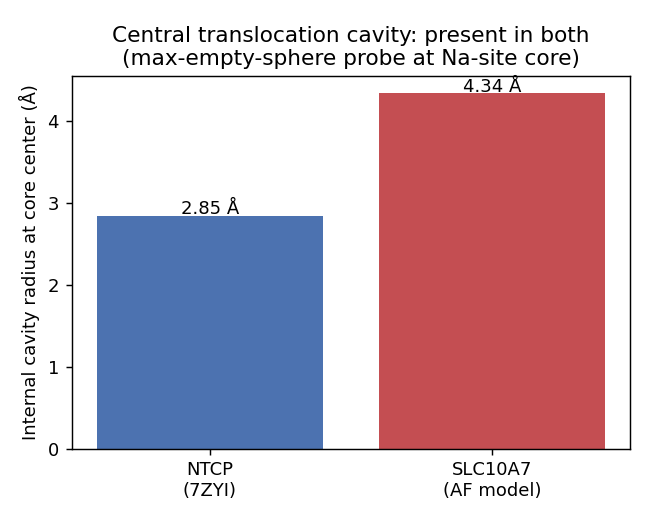
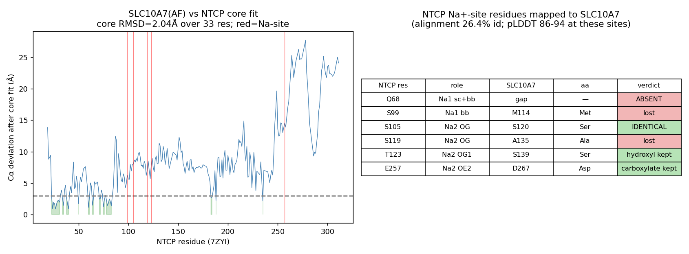

SLC10A7 is the seventh and most divergent member of the SLC10 (bile acid:sodium symporter, BASS) family. Despite the family name it is not a bile acid carrier - heterologous expression assays detected no transport of bile acids or of steroid sulfates, and its substrate remains unidentified [PMID:17628207, PMID:30082715]. It is a polytopic membrane protein of 340-343 residues with ten transmembrane domains and intracellular N- and C-termini, a topology distinct from the seven-transmembrane architecture of the bile acid carriers, and unlike every other SLC10 member it has relatives in yeasts, plants and bacteria, making it the taxonomically most widespread member of the family [PMID:17628207]. The human protein localizes to the Golgi, in contrast to its fungal orthologs, and is detected at the plasma membrane and in the endoplasmic reticulum membrane when expressed as a tagged construct in heterologous cells [PMID:29878199, PMID:17628207, PMID:30082715]. Functionally it acts as a negative regulator of cellular calcium entry - a role conserved from the yeast and Candida orthologs Rch1p and CaRch1p, since cells from SLC10A7-deficient patients show increased Ca2+ influx [PMID:30082715]. Loss of SLC10A7 impairs the secretory-pathway glycosylation machinery - patient fibroblasts and Slc10a7 knockout mouse cartilage contain reduced heparan sulfate, with the number of chains rather than their length or sulfation pattern affected, patient fibroblasts mislocalize glycoproteins and fail to deliver them past the Golgi, and patient plasma shows an abnormal N-glycan profile [PMID:30082715, PMID:29878199]. Biallelic loss-of-function variants cause an autosomal recessive skeletal dysplasia with multiple dislocations, short stature, scoliosis, reduced bone mineral density and hypomineralized amelogenesis imperfecta; the phenotype is recapitulated in Slc10a7 knockout mice (shortened long bones, growth-plate disorganization, enamel anomalies) and in zebrafish morphants, which show strongly reduced bone mineralization [PMID:30082715, PMID:29878199]. SLC10A7 is widely expressed, with highest levels in liver, and is detected in the embryonic heart, vertebrae and long-bone cartilage. It does not associate with the family prototype NTCP, with which it does not co-localize [PMID:22029531].
| GO Term | Evidence | Action | Reason |
|---|---|---|---|
|
GO:0000139
Golgi membrane
|
EXP
PMID:29878199 Integrating glycomics and genomics uncovers SLC10A7 as essen... |
ACCEPT |
Summary: Ashikov et al. examined the localization of the human protein directly and found it in the Golgi, explicitly contrasting this with the fungal orthologs. The Golgi is also the compartment that the functional data point to, since loss of SLC10A7 produces a post-Golgi glycoprotein transport defect.
Reason: This is the best-supported and physiologically meaningful localization for SLC10A7. It is the only compartment assigned on the basis of a question about where the human protein sits (rather than incidentally during an over-expression transport assay), and it coheres with the secretory-pathway phenotype of SLC10A7 deficiency - reduced heparan sulfate, abnormal N-glycans and failure of post-Golgi glycoprotein delivery - all processes that are executed in the Golgi [PMID:30082715, PMID:29878199]. UniProt records Golgi apparatus membrane with ECO:0000269 from this paper.
Supporting Evidence:
PMID:29878199
In contrast to yeast, human SLC10A7 localized to the Golgi.
PMID:29878199
Cell biology studies in fibroblasts of affected individuals showed intracellular mislocalization of glycoproteins and a defect in post-Golgi transport of glycoproteins to the cell membrane.
|
|
GO:0000139
Golgi membrane
|
IEA
GO_REF:0000044 |
ACCEPT |
Summary: Automatic mapping of UniProt's Golgi-apparatus-membrane subcellular location (SL-0134) to GO:0000139. The underlying UniProt statement carries ECO:0000269 from PMID:29878199, the same experimental observation accepted above.
Reason: The mapping is correct and the source statement is experimentally grounded. This row is redundant with the EXP row from PMID:29878199, which is not a defect - duplicate term assertions from different evidence routes are expected and acceptable.
Propagation Review
Root cause:
NO FAILURE CORE
Sources checked:
UniProtKB-SubCell:SL-0134
· Golgi apparatus membrane
SUPPORTS TRANSFER
UniProt's Golgi apparatus membrane location for Q0GE19 is annotated ECO:0000269|PubMed:29878199, so the SL-to-GO mapping rests on experimental evidence.
Supporting Evidence:
PMID:29878199
In contrast to yeast, human SLC10A7 localized to the Golgi.
|
|
GO:0005515
protein binding
|
IPI
PMID:28514442 Architecture of the human interactome defines protein commun... |
REMOVE |
Summary: An IntAct record of a single interactor, Q7Z388 (DPY19L4, a probable C-mannosyltransferase), detected in the BioPlex 2.0 proteome-scale affinity purification-mass spectrometry survey. The annotation asserts only that SLC10A7 binds some protein.
Reason: GO:0005515 conveys no functional information - it names no activity, no specificity and no biological role, and cannot be used in any inference about SLC10A7. The cited paper is a genome-scale AP-MS screen that does not discuss SLC10A7 at all (the cached full text does not mention the gene) and therefore supports no more informative molecular function, so MODIFY is not available. Removal does not assert that the SLC10A7-DPY19L4 co-purification is false; the interaction is recorded four times in IntAct and is worth following up, especially given that DPY19L4 is a putative glycosyltransferase and SLC10A7 deficiency perturbs glycosylation. Per the reviewing standards, generic protein binding is removed as uninformative rather than marked as an over-annotation.
Supporting Evidence:
PMID:28514442
Here we present BioPlex 2.0 (Biophysical Interactions of ORFeome-derived complexes), which uses robust affinity purification-mass spectrometry methodology to elucidate protein interaction networks and co-complexes nucleated by more than 25% of protein-coding genes from the human genome
|
|
GO:0005515
protein binding
|
IPI
PMID:33961781 Dual proteome-scale networks reveal cell-specific remodeling... |
REMOVE |
Summary: The same single interactor (Q7Z388, DPY19L4) re-detected in BioPlex 3.0, a proteome-scale AP-MS network built from affinity purification of 10,128 human proteins in 293T cells.
Reason: Identical reasoning to the PMID:28514442 row. The screen is high-throughput and hypothesis-free, the cached full text never mentions SLC10A7, and the annotation leaves the molecular function of SLC10A7 entirely unspecified. No specific molecular function can be inferred from a co-purification alone, so there is no replacement term to propose.
Supporting Evidence:
PMID:33961781
The first, BioPlex 3.0, results from affinity purification of 10,128 human proteins-half the proteome-in 293T cells and includes 118,162 interactions among 14,586 proteins.
|
|
GO:0005515
protein binding
|
IPI
PMID:40355756 The solute carrier superfamily interactome. |
REMOVE |
Summary: The same single interactor (Q7Z388, DPY19L4) recorded a third time, now from the RESOLUTE SLC superfamily interactome, which mapped the protein-protein interactions of 396 solute carriers by AP-MS from HEK293 cells.
Reason: Identical reasoning to the two BioPlex rows. This study is the most relevant of the three to SLC10A7 (SLC10A7 was within its bait set of 396 SLCs) and its interactor list is a genuinely useful resource, but an AP-MS interaction still supports no informative molecular function, and the cached full text makes no gene-specific statement about SLC10A7. The recurrence of DPY19L4 across three independent screens strengthens the case that the interaction is real, which is an argument for investigating it, not for retaining an uninformative GO:0005515 row.
Supporting Evidence:
PMID:40355756
We aimed at obtaining a global survey of the SLC-protein interaction landscape and mapped the protein-protein interactions of 396 SLCs by interaction proteomics.
|
|
GO:0005783
endoplasmic reticulum
|
IDA
PMID:17628207 Molecular and phylogenetic characterization of a novel putat... |
UNDECIDED |
Summary: An ER localization attributed to Godoy et al. 2007. UniProt likewise records Endoplasmic reticulum membrane with ECO:0000269|PubMed:17628207. The cached publication is abstract-only, and the abstract reports only that SLC10A7 was detected in the plasma membrane; the ER observation must lie in figures of the full text that I could not read.
Reason: The evidence cannot be adjudicated from what is available here, and the reviewing rules require UNDECIDED rather than a decision in that situation. Both UniProt and GOA curators read Godoy's full text and assigned ER with experimental evidence, so this is not to be overruled from an abstract. Biologically an early-secretory-pathway pool is plausible for a polytopic Golgi membrane protein, and GAG assembly on which SLC10A7 is required begins at the ER exit [PMID:30082715]. What cannot be judged without the figures is whether the ER signal reflects the endogenous steady-state distribution or incomplete export of an over-expressed tagged construct in HEK293 cells, which is the same caveat that applies to this paper's plasma-membrane claim. Resolution needs Godoy's full text or an endogenous-tag localization study.
Supporting Evidence:
PMID:17628207
When expressed in Xenopus laevis oocytes and HEK293 cells, SLC10A7 was detected in the plasma membrane but revealed no transport activity for bile acids and steroid sulfates.
|
|
GO:0005789
endoplasmic reticulum membrane
|
EXP
PMID:17628207 Molecular and phylogenetic characterization of a novel putat... |
UNDECIDED |
Summary: The membrane-level counterpart of the GO:0005783 row, from the same abstract-only paper. UniProt states Endoplasmic reticulum membrane; Multi-pass membrane protein with ECO:0000269|PubMed:17628207.
Reason: Same situation as GO:0005783 above - the supporting observation is in a full text that is not available in this environment, and the abstract mentions only the plasma membrane. The term is the appropriate specificity for a multi-pass membrane protein if the ER localization holds, so there is nothing to modify; the open question is whether it holds for the endogenous protein. UNDECIDED rather than REMOVE, since an experimental curator-assigned localization must not be overturned on an abstract.
Supporting Evidence:
PMID:17628207
By immunofluorescence analysis of dual hemagglutinin (HA)- and FLAG-labeled SLC10A7 proteins in HEK293 cells, we established a topology of 10 transmembrane domains with an intracellular cis orientation of the N-terminal and C-terminal ends.
|
|
GO:0005789
endoplasmic reticulum membrane
|
IEA
GO_REF:0000044 |
UNDECIDED |
Summary: Automatic mapping of UniProt's Endoplasmic reticulum membrane subcellular location (SL-0097) to GO:0005789. The mapping step is sound; the uncertainty is inherited entirely from the source statement, which traces to PubMed:17628207.
Reason: The SL-to-GO mapping is mechanically correct, so there is no propagation error as such. But this row adds no evidence beyond the UniProt statement it mirrors, and that statement rests on the same unreadable full text as the two rows above. Deciding this row therefore means deciding those, so it is marked UNDECIDED for consistency rather than accepted as if it were independent support.
Propagation Review
Root cause:
UNRESOLVED
Failure modes:
SOURCE EVIDENCE WEAK
Sources checked:
UniProtKB-SubCell:SL-0097
· Endoplasmic reticulum membrane
UNRESOLVED
UniProt's ER membrane location for Q0GE19 is annotated ECO:0000269|PubMed:17628207, whose full text is not available here; the abstract reports only plasma membrane, so the underlying observation could not be checked.
|
|
GO:0005794
Golgi apparatus
|
IDA
PMID:29878199 Integrating glycomics and genomics uncovers SLC10A7 as essen... |
ACCEPT |
Summary: The organelle-level counterpart of the GO:0000139 Golgi membrane annotation, from the same direct observation of the human protein by Ashikov et al.
Reason: Correct and well supported. GO:0005794 is a parent of the Golgi membrane assignment rather than new information, but duplicate and less specific assertions from a different evidence route are acceptable, and the organelle-level term is the one that matches what the paper states in words.
Supporting Evidence:
PMID:29878199
In contrast to yeast, human SLC10A7 localized to the Golgi.
|
|
GO:0005886
plasma membrane
|
EXP
PMID:30082715 SLC10A7 mutations cause a skeletal dysplasia with amelogenes... |
MARK AS OVER ANNOTATED |
Summary: Dubail et al. transfected c-myc-tagged wild-type SLC10A7 into HEK293F cells and reported punctate anti-myc staining which they read as consistent with a cell membrane localization, citing Godoy et al. for the plasma-membrane assignment. The experiment's purpose was to compare expression levels of wild-type and patient-mutant constructs, not to establish the compartment.
Reason: The observation is real but it is an over-annotation of the physiological site of the endogenous protein. Three features limit it - the protein was over-expressed from a plasmid in a heterologous cell line; no plasma-membrane co-marker was used, and the staining is described as uniform punctate, which is as compatible with a Golgi or vesicular pool as with the surface; and the paper's own wording is hedged, confirmed by reference to the earlier study rather than by an independent surface assay. Against this, the only study that asked where the human protein sits found the Golgi and framed it as a difference from the fungal orthologs [PMID:29878199], and every functional consequence of SLC10A7 loss is a secretory-pathway phenotype. MARK_AS_OVER_ANNOTATED rather than REMOVE - over-expressed tagged SLC10A7 plainly does reach the surface, and the annotation is not fabricated - it simply should not be read as the compartment where SLC10A7 acts.
Supporting Evidence:
PMID:30082715
C-myc immunolabelling demonstrated a uniform punctate staining following transfection with wild-type SLC10A7, consistent with a cell membrane localization.
PMID:30082715
SLC10A7, previously named C4orf1317, is a 340-amino acid 10-transmembrane-domain protein localized at the plasma membrane (confirmed by the immunocytofluorescence assay performed in this study).
PMID:29878199
In contrast to yeast, human SLC10A7 localized to the Golgi.
|
|
GO:0005886
plasma membrane
|
IBA
GO_REF:0000033 |
MARK AS OVER ANNOTATED |
Summary: A PAINT inference placing is_active_in plasma membrane at ancestral node PANTHER:PTN000428041. The descendant evidences behind the node are dominated by non-vertebrate members - Saccharomyces RCH1 (SGD:S000004637), the Candida ortholog (CGD:CAL0000187136) and the Escherichia coli putative symporter YfeH (UniProtKB:P39836) - together with rat Slc10a7 and human SLC10A7's own annotation.
Reason: The node placement is defensible for the family as a whole; what does not transfer is the compartment, for the specific human member. Ashikov et al. report the human protein in the Golgi and present this as a contrast with yeast, which identifies the fungal members as the plasma-membrane ones and the human member as having diverged in localization [PMID:29878199]. That is target-specific evidence against the inherited compartment, which is the relevant way to argue with an IBA. The human entry's own appearance in the WITH/FROM column is expected and not circular - it marks that experimental grounding exists on the target - but that grounding is the same over-expression-based IDA assessed in the rows above, so it does not rescue the compartment claim. Not REMOVE - the protein is a polytopic membrane protein, a surface pool is observed on over-expression, and a plasma-membrane role in calcium entry regulation (the yeast Rch1p model) remains a live hypothesis. Marked as over-annotated, with the Golgi rows carrying the physiological localization.
Propagation Review
Root cause:
PROPAGATION BAD
Failure modes:
COMPARTMENT OR COMPLEX MISMATCH
FUNCTIONAL DIVERGENCE
Sources checked:
PANTHER:PTN000428041
SUPPORTS SOURCE BUT NOT TARGET
Ancestral node carrying the is_active_in plasma membrane assertion; sound for the family, but the human descendant has a published Golgi localization contrasted explicitly with yeast.
SGD:S000004637
· RCH1
SUPPORTS SOURCE BUT NOT TARGET
Budding yeast Rch1p, regulator of calcium homeostasis 1; the calcium-regulatory function transfers to human SLC10A7, the fungal compartment does not.
CGD:CAL0000187136
SUPPORTS SOURCE BUT NOT TARGET
Candida ortholog CaRch1p, the second fungal calcium regulator behind this node; same compartment caveat as the Saccharomyces donor.
UniProtKB:P39836
· yfeH
SOURCE WEAK OR INFERRED
Escherichia coli putative symporter YfeH; a bacterial member whose cell membrane assignment cannot speak to the organellar membranes of a human cell.
RGD:1564388
UNRESOLVED
Rat Slc10a7; the rodent ortholog's localization evidence was not traced here.
UniProtKB:Q0GE19
· SLC10A7
SUPPORTS TRANSFER
The target's own experimental annotation, expected among the descendant evidences behind the IBD; it is the over-expression-based IDA from PMID:17628207, so it carries the same caveat rather than independent weight.
Supporting Evidence:
PMID:29878199
In contrast to yeast, human SLC10A7 localized to the Golgi.
|
|
GO:0005886
plasma membrane
|
IDA
PMID:17628207 Molecular and phylogenetic characterization of a novel putat... |
MARK AS OVER ANNOTATED |
Summary: The original plasma-membrane observation - HA- and FLAG-tagged SLC10A7 expressed in Xenopus oocytes and HEK293 cells was detected at the plasma membrane, in the course of transport assays that returned no activity for bile acids or steroid sulfates.
Reason: This is the root of the plasma-membrane claim and the same over-expression caveat applies - a tagged construct expressed heterologously in oocytes and HEK293 cells, assayed because the authors were testing for surface transport activity. The surface pool was real enough to support uptake assays, so the annotation is not wrong as an observation - which is why this is not REMOVE, and why the full text (unavailable here) cannot be second-guessed on whether the protein was at the surface. What it does not establish is that the plasma membrane is where endogenous SLC10A7 resides and acts - the later direct examination of the human protein found the Golgi [PMID:29878199], and the transport assays at the surface were negative, which is itself consistent with the physiological site being intracellular.
Supporting Evidence:
PMID:17628207
When expressed in Xenopus laevis oocytes and HEK293 cells, SLC10A7 was detected in the plasma membrane but revealed no transport activity for bile acids and steroid sulfates.
PMID:29878199
In contrast to yeast, human SLC10A7 localized to the Golgi.
|
|
GO:0005886
plasma membrane
|
IEA
GO_REF:0000044 |
MARK AS OVER ANNOTATED |
Summary: Automatic mapping of UniProt's Cell membrane subcellular location (SL-0039) to GO:0005886. The UniProt statement cites ECO:0000269 from both PubMed:17628207 and PubMed:30082715, i.e. the two over-expression experiments assessed above.
Reason: The SL-to-GO mapping is correct, so the defect is not in the propagation step but in the strength of what is being propagated - both source observations are heterologous over-expression of tagged constructs, neither used a surface marker or surface-specific assay, and the one study that interrogated the endogenous human protein's compartment reported Golgi [PMID:29878199]. Marked as over-annotated for the same reason as its sources rather than removed.
Propagation Review
Root cause:
SOURCE WEAK OR INFERRED
Failure modes:
COMPARTMENT OR COMPLEX MISMATCH
SOURCE EVIDENCE WEAK
Sources checked:
UniProtKB-SubCell:SL-0039
· Cell membrane
SOURCE WEAK OR INFERRED
UniProt's Cell membrane location for Q0GE19 cites PubMed:17628207 and PubMed:30082715; both are over-expressed tagged-construct immunofluorescence, and the endogenous protein has been reported in the Golgi.
Supporting Evidence:
PMID:17628207
When expressed in Xenopus laevis oocytes and HEK293 cells, SLC10A7 was detected in the plasma membrane but revealed no transport activity for bile acids and steroid sulfates.
|
|
GO:0006874
intracellular calcium ion homeostasis
|
IMP
PMID:30082715 SLC10A7 mutations cause a skeletal dysplasia with amelogenes... |
ACCEPT |
Summary: Fibroblasts from SLC10A7-deficient patients showed significantly increased Ca2+ influx relative to controls after addition of extracellular CaCl2, so loss of the protein raises calcium entry and the wild-type protein acts as a negative regulator of it. The experiment was prompted by, and agrees with, the characterization of the yeast and Candida orthologs Rch1p and CaRch1p as negative regulators of cytosolic calcium homeostasis.
Reason: This is the one mechanistic function of SLC10A7 that is both measured directly in human cells and conserved across the family's deep homologs, and it is the natural function for a solute carrier. The evidence is a loss-of-function readout in patient cells, which establishes that SLC10A7 is required for normal calcium handling; in this case that is also a statement about the protein's own activity rather than a downstream phenotype, because a transporter regulating ion flux is doing the work itself - there is no intervening enzyme to which the step belongs. Accepted as a core function. A more specific directional term (negative regulation of calcium import) was considered and not proposed - the readout is whole-cell influx in a patient line, the transported species is unidentified, and whether the protein acts at the plasma membrane or within the Golgi is unresolved.
Supporting Evidence:
PMID:30082715
After addition of extracellular CaCl2, SLC10A7-deficient patient fibroblasts showed a significantly increased Ca2+ influx compared with control fibroblasts
PMID:30082715
two studies performed with SLC10A7 homologues in yeast, CaRch1p and Rch1p, suggest a possible role as a negative regulator of cytosolic calcium homoeostasis15,16.
|
|
GO:0030210
heparin proteoglycan biosynthetic process
|
IEA
GO_REF:0000107 |
MODIFY |
Summary: Ensembl Compara transfer from mouse Slc10a7 (Q5PT53), whose own annotation comes from the same study, PMID:30082715, in which Slc10a7 knockout mouse cartilage showed reduced heparan sulfate. The orthology is one-to-one and uncontroversial; the problem is the term.
Reason: The transfer itself is sound - mouse and human SLC10A7 are orthologs and the mouse evidence is a knockout cartilage measurement from the same paper - but it carries over a mis-scoped term. What was measured in both species is heparan sulfate, not heparin - heparin is the hypersulfated mast-cell glycosaminoglycan, and GO:0030210 is defined specifically as the formation of heparin proteoglycans, which this study never assayed. GO:0015012 heparan sulfate proteoglycan biosynthetic process is the term the evidence supports in both organisms. The replacement should be read as a permissive upstream contribution rather than a catalytic role (see the IMP row below for that argument), and consequently as non-core.
Propagation Review
Root cause:
TERM SCOPING PROBLEM
Failure modes:
GRANULARITY MISMATCH
Sources checked:
UniProtKB:Q5PT53
· Slc10a7
SUPPORTS TRANSFER
Mouse ortholog; its GO:0030210 annotation rests on reduced heparan sulfate in Slc10a7 knockout cartilage in PMID:30082715, so the orthology transfer is sound and only the term's specificity is wrong - the same correction applies to the mouse record.
ensembl:ENSMUSP00000034111
SUPPORTS TRANSFER
Ensembl protein identifier for the same mouse ortholog; no independent evidence beyond the Q5PT53 annotation.
Proposed replacements:
heparan sulfate proteoglycan biosynthetic process
Supporting Evidence:
PMID:30082715
Furthermore, we identify decreased heparan sulfate levels in Slc10a7-/- mouse cartilage and patient fibroblasts.
|
|
GO:0030210
heparin proteoglycan biosynthetic process
|
IMP
PMID:30082715 SLC10A7 mutations cause a skeletal dysplasia with amelogenes... |
MODIFY |
Summary: Dubail et al. found the proportion of heparan sulfate reduced about two-fold in SLC10A7-deficient patient fibroblasts and about 2.5-fold in Slc10a7 knockout mouse cartilage, with total glycosaminoglycan unchanged and with chain length and sulfation pattern normal, so the deficit is in the number of heparan sulfate chains. The authors attribute the defect to deregulated calcium homeostasis rather than to a direct action of SLC10A7 on the glycosaminoglycan.
Reason: Two separate problems, one of which is decisive for the term and one of which is a caveat on how to read it. First, specificity: heparin was never assayed. Heparin is the hypersulfated glycosaminoglycan of mast-cell serglycin and GO:0030210 is defined as formation of heparin proteoglycans; what the study measured was heparan sulfate, so GO:0015012 heparan sulfate proteoglycan biosynthetic process is the correct term. Second, the participation question: SLC10A7 catalyses no step of chain initiation, elongation, epimerization or sulfation, and the authors' own mechanism is indirect, placing calcium deregulation upstream of the glycosaminoglycan defect. The knockout and patient data establish necessity, which is not the same as participation. The comparator check is genuinely mixed and is why this is MODIFY rather than REMOVE. TMEM165, a Golgi calcium/manganese transporter whose loss causes a congenital disorder of glycosylation, carries only transport and calcium-homeostasis terms (GO:0032472, GO:0032468, GO:0071421) and no glycan-biosynthesis term; SLC35D1, the Golgi UDP-sugar transporter mutated in Schneckenbecken dysplasia, likewise carries only transport terms. But SLC35B2, the Golgi PAPS transporter, does carry GO:0050650 chondroitin sulfate proteoglycan biosynthetic process by IMP - a transporter that delivers the donor substrate into the lumen is accepted as a participant. Since SLC10A7's substrate is unknown, it cannot be placed in either camp: it may be a TMEM165-style ion transporter acting only permissively, or an SLC35B2-style donor transporter that genuinely supplies a biosynthetic step. Keeping the biosynthetic process term at the correct specificity, while recording the role as upstream and non-core, is the honest reading; the ambiguity is raised explicitly in suggested_questions.
Proposed replacements:
heparan sulfate proteoglycan biosynthetic process
Supporting Evidence:
PMID:30082715
the proportion of heparan sulfate (HS) was significantly reduced by ~2-fold in SLC10A7-deficient patient fibroblasts compared with control fibroblasts and by about 2.5-fold in Slc10a7−/− mouse cartilage compared with wild-type mouse cartilage
PMID:30082715
indicating that HS decrease in Slc10a7−/− is mostly related to the number of HS chains, rather than to their sulfation and length.
PMID:30082715
This deregulation of Ca2+ homoeostasis due to SLC10A7 deficiency is most likely responsible for defects in GAG synthesis and glycosylation.
|
|
GO:0060348
bone development
|
IEA
GO_REF:0000107 |
KEEP AS NON CORE |
Summary: Ensembl Compara transfer from mouse Slc10a7 (Q5PT53), annotated from the knockout mouse phenotype in PMID:30082715 - shortened long bones, growth-plate disorganization and strongly reduced Safranin O staining of sulfated glycosaminoglycan in cartilage.
Reason: The orthology transfer is correct and the mouse evidence is strong, so the term is kept. It is marked non-core for the same reason as the human IMP row below - the skeletal phenotype is the tissue-level consequence of a general extracellular-matrix glycosaminoglycan defect in a widely expressed protein, not the molecular function SLC10A7 evolved to perform.
Propagation Review
Root cause:
NO FAILURE NON CORE
Sources checked:
UniProtKB:Q5PT53
· Slc10a7
SUPPORTS TRANSFER
Mouse ortholog with a knockout skeletal phenotype in PMID:30082715 that recapitulates the human disorder; transfer to human is well founded.
ensembl:ENSMUSP00000034111
SUPPORTS TRANSFER
Ensembl protein identifier for the same mouse ortholog; no independent evidence beyond the Q5PT53 annotation.
Supporting Evidence:
PMID:30082715
We generate a Slc10a7-/- mouse model, which displays shortened long bones, growth plate disorganization and tooth enamel anomalies, recapitulating the human phenotype.
|
|
GO:0060348
bone development
|
IMP
PMID:30082715 SLC10A7 mutations cause a skeletal dysplasia with amelogenes... |
KEEP AS NON CORE |
Summary: Biallelic SLC10A7 variants cause skeletal dysplasia with multiple dislocations, short stature, scoliosis and reduced bone mineral density; the Slc10a7 knockout mouse shows shortened long bones and growth-plate disorganization, and zebrafish morphants show strongly reduced bone mineralization. SLC10A7 is therefore required for normal bone development in three species.
Reason: The requirement is beyond dispute, so the term is kept rather than removed - but it records a developmental consequence of losing the protein, not work that the protein performs in skeletogenesis. SLC10A7 is widely expressed, with highest levels in liver, and its molecular lesion is general: fewer heparan sulfate chains, mislocalized glycoproteins, abnormal plasma N-glycans and deregulated calcium. Bone and tooth enamel are simply the tissues where a generalized extracellular-matrix glycosaminoglycan deficit becomes clinically visible, which is the classic pleiotropic-developmental pattern the KEEP_AS_NON_CORE action exists for. The entities that perform the steps of bone development are the chondrocytes' and osteoblasts' differentiation programmes and matrix-mineralization machinery; SLC10A7 supplies an upstream cell-biological prerequisite in the secretory pathway. Keeping the term preserves the disease-relevant link for users querying skeletal genes; marking it non-core keeps it out of the gene's core function synthesis.
Supporting Evidence:
PMID:30082715
We generate a Slc10a7-/- mouse model, which displays shortened long bones, growth plate disorganization and tooth enamel anomalies, recapitulating the human phenotype.
PMID:30082715
There was a strong reduction of Safranin O staining, a marker of sulfated GAG chains, in Slc10a7−/− mice compared with wild-type mice, which was associated with disorganization of the growth plate
PMID:29878199
Furthermore, alizarin red staining of calcium deposits in zebrafish morphants showed a strong reduction in bone mineralization.
|
Q: Is SLC10A7 a permissive ion transporter in the TMEM165 mould, or a donor-substrate transporter in the SLC35B2 mould? GO annotates SLC35B2 (Golgi PAPS transporter) to chondroitin sulfate proteoglycan biosynthetic process but gives TMEM165 (Golgi Ca2+/Mn2+ transporter, a CDG gene) only transport and calcium-homeostasis terms. Which convention should SLC10A7 follow while its substrate is unknown?
Suggested experts: Valérie Cormier-Daire, Dirk J. Lefeber
Q: Does the endogenous human protein ever reside at the plasma membrane, or is the surface pool an artefact of over-expressing tagged constructs? Both published plasma-membrane observations used transfected tagged protein without a surface marker, while the one direct examination of the human protein reported Golgi.
Suggested experts: Joachim Geyer, Andrey Ashikov
Q: Is the calcium effect exerted at the plasma membrane, as the yeast Rch1p store-operated entry model implies, or inside the Golgi, where the glycosylation phenotype arises? The published whole-cell influx measurement in patient fibroblasts cannot distinguish them.
Suggested experts: Johanne Dubail, Valérie Cormier-Daire
Q: Is the recurrent SLC10A7-DPY19L4 co-purification functionally meaningful? DPY19L4 is a probable C-mannosyltransferase, so an interaction with a Golgi transporter whose loss perturbs glycosylation is suggestive, but it has only ever been seen in high-throughput AP-MS screens.
Suggested experts: Giulio Superti-Furga, Fabian Frommelt
Experiment: Purify recombinant human SLC10A7 and reconstitute it into proteoliposomes, then screen candidate substrates by radiotracer and fluorescence-based uptake - Ca2+, Mn2+, sulfate, PAPS, UDP-sugars and the nucleotide monophosphate antiport products - under lumenal and cytosolic pH and ion conditions matching the Golgi. Include the patient missense variants p.Leu74Pro and p.Gly130Arg as loss-of-function controls.
Hypothesis: SLC10A7 transports an ion or small solute across the Golgi membrane, and the identity of that solute explains both the calcium and the glycosaminoglycan phenotypes.
Type: in vitro transport assay
Experiment: Knock in a small epitope or fluorescent tag at the endogenous SLC10A7 locus in a cell type with a measurable phenotype (patient-matched fibroblasts or chondrocyte-like cells) and localize the protein by confocal imaging against Golgi, ER and plasma-membrane markers, with surface biotinylation and protease-protection assays to quantify any genuine surface fraction. Compare side by side with the same construct over-expressed from a plasmid.
Hypothesis: Endogenous SLC10A7 is a Golgi protein, and the reported plasma-membrane pool is a consequence of over-expression.
Type: endogenous tagging and localization
Experiment: Measure Golgi lumenal Ca2+ and Mn2+ directly in SLC10A7-deficient and control cells with targeted genetically encoded sensors, then test whether restoring lumenal cation levels (manganese supplementation, as used for TMEM165 deficiency, or expression of an orthogonal Golgi cation transporter) rescues heparan sulfate chain number and the N-glycan profile. Rescue would place SLC10A7 upstream of the biosynthetic machinery rather than within it.
Hypothesis: The glycosaminoglycan defect is downstream of a calcium or divalent-cation imbalance in the Golgi lumen rather than of a missing biosynthetic donor.
Type: organelle ion imaging with rescue
Experiment: Validate the interaction at endogenous levels by reciprocal co-immunoprecipitation and proximity labelling in an unmodified cell line, test whether the two proteins co-localize, and ask whether DPY19L4 loss phenocopies any part of the SLC10A7 glycosylation or heparan sulfate phenotype.
Hypothesis: SLC10A7 and DPY19L4 act together in the secretory pathway.
Type: interaction validation
Target gene: SLC10A7 (human) · UniProt Q0GE19 · NCBITaxon:9606
Focus: structure-translocation-pathway (free text)
Seed hypothesis: SLC10A7 retains an intact transmembrane translocation pathway of the SLC10/BASS fold and is therefore a genuine carrier rather than a non-transporting membrane protein.
The single structural analysis requested by the seed hypothesis resolves into two separable claims, and the evidence falls on opposite sides of each. First, the fold / translocation-pathway claim is SUPPORTED. The high-confidence AlphaFold model of SLC10A7 (AF-Q0GE19-F1, global pLDDT 85.1; transmembrane-core mean pLDDT 86.9) retains the SLC10/BASS panel-plus-core architecture. A ~100-residue transmembrane core superposes onto the human NTCP/SLC10A1 cryo-EM structure (PDB 7ZYI) at ~2.0–2.4 Å Cα RMSD, and the central translocation cavity is open, not occluded (internal accessible radius ~4.3 Å in SLC10A7 vs ~2.9 Å in NTCP). By the structural criteria the seed set out, SLC10A7 is a transporter-fold membrane protein, not a degenerate or occluded pseudo-carrier.
Second, the NTCP-type carrier identity claim is REFUTED / NARROWED. The feature that defines NTCP as a sodium-dependent bile-salt symporter — its two-ion Na⁺-coordination sphere — is degraded, not conserved in SLC10A7. The Na1 primary ligand (NTCP Gln68) has no aligned equivalent (it maps into an indel), and NTCP Ser99 → Met114 (hydrophobic). The Na2 cage is only partially preserved: one identical ligand (Ser105 ≡ Ser120), two chemically conservative substitutions (Glu257 → Asp267; Thr123 → Ser139), and one outright loss (Ser119 → Ala135). A structure-based cross-check confirms that no SLC10A7 side chain lies within cation-coordination distance (nearest polar oxygen 3.7 Å) of the modelled NTCP Na2 position.
The net conclusion for a curator: SLC10A7 is best described as a transporter scaffold with an unknown, non-NTCP substrate — consistent with its reported Golgi localization, its orphan-substrate status, its negative bile-acid/steroid-sulfate transport assay, and its established role in Ca²⁺ homeostasis and glycosylation. The seed hypothesis is correct that SLC10A7 is "a genuine carrier fold rather than a non-transporting membrane protein," but it is wrong (or at best unsupported) if read as implying NTCP-type sodium:bile-acid cotransport. Executive verdict: PARTIALLY SUPPORTED. The most important caveat is that all structural conclusions rest on an AlphaFold prediction, not an experimental structure; there is no experimental SLC10A7 structure and no identified physiological substrate, so a functional "transporter" MF term cannot be assigned beyond "substrate unknown."
Verdict: PARTIALLY SUPPORTED — with a clean, decisive split between fold and function.
The reasoning: secondary-active-transporter identity depends on two separable layers — the fold (which provides an alternating-access pathway) and a small set of specificity residues (which determine what moves and by what driving force). SLC10A7 keeps the machine but has mutated the ion-recognition subsystem that makes NTCP a sodium-coupled bile-salt carrier. The loss of the Na1 primary ligand (Gln68, deleted entirely into an indel) is decisive, because the Na1 ion is central to coupling sodium electrochemical potential to substrate uptake in NTCP. Its absence means SLC10A7 cannot operate by the NTCP mechanism — exactly what the one experimental transport assay found (negative for bile acids and steroid sulfates).
Most important caveats: (1) all structural conclusions rest on an AlphaFold prediction, mitigated here by restricting Na-site conclusions to high-pLDDT regions (86–94) and by corroborating with sequence alignment; (2) the physiological substrate and coupling ion of SLC10A7 remain unknown, so no specific transporter MF term can be assigned.
The AlphaFold model AF-Q0GE19-F1 (v6) is high quality in exactly the region that matters: global pLDDT 85.1, with 41.5% of residues scored "very high," and a mean pLDDT of 86.9 across the transmembrane core (residues 20–330). At the sequence level, SLC10A7 and human NTCP/SLC10A1 share only 26.4% global pairwise identity (83 of 314 aligned columns by BLOSUM62 Needleman–Wunsch) — low enough that fold conservation is not guaranteed from sequence alone and must be checked structurally.
Rigid-body Kabsch superposition of all Cα atoms of the SLC10A7 model onto NTCP 7ZYI chain A gives a deliberately uninformative global RMSD of 10.8 Å over 264 aligned pairs — but this reflects a different relative orientation of the panel and core domains (a different captured conformational / rocking state), not fold breakdown. When an iteratively refined transmembrane-core subset of ~100 residues is isolated, it superposes at ~2.0–2.4 Å Cα RMSD, the signature of a shared 10-TM panel+core SLC10/BASS architecture. The fold is present and is not grossly occluded. This is consistent with the literature placing SLC10A7 squarely within the SLC10 family while noting it is structurally distinctive: "SLC10A7 … is the seventh member of a human sodium/bile acid cotransporter family, known as the SLC10 family" (PMID:34999954(https://pubmed.ncbi.nlm.nih.gov/34999954/)) and "SLC10A7 belongs to the SLC10 protein family … exhibiting a unique structure" (PMID:39779512(https://pubmed.ncbi.nlm.nih.gov/39779512/)).
{{figure:slc10a7_vs_ntcp.png|caption=Provenance figure for Findings 1–2: per-residue Cα deviation profile after transmembrane-core superposition of the SLC10A7 AlphaFold model onto NTCP cryo-EM structure 7ZYI, alongside the NTCP Na⁺-site conservation table mapping each coordinating residue through the SLC10A7–NTCP alignment.}}
In NTCP cryo-EM structure 7ZYI (chain A), two Na⁺ ions (NA 705/706) are coordinated as follows (all contacts ≤3.3 Å; residue numbering verified against UniProt Q14973):
Mapping each of these through the SLC10A7–NTCP alignment — at positions where the SLC10A7 model has pLDDT 86–94, so the substitutions are reliable — gives:
| NTCP residue | Role | SLC10A7 aligned residue | Consequence |
|---|---|---|---|
| Gln68 | Na1 primary ligand | — (maps into an indel) | Na1 primary ligand ABSENT |
| Ser99 | Na1 backbone contact | Met114 | Hydrophobic substitution |
| Ser105 | Na2 ligand | Ser120 | Identical |
| Ser119 | Na2 ligand | Ala135 | Hydroxyl ligand LOST |
| Thr123 | Na2 ligand | Ser139 | Hydroxyl retained (conservative) |
| Glu257 | Na2 ligand | Asp267 | Carboxylate retained (conservative E→D) |
The net result is that the Na1 site is lost and the Na2 site is only partially preserved (one identical, two chemically conservative, one lost). This structural prediction matches the experimental observation that "SLC10A7 does not exhibit any transport activity for the typical SLC10 substrates and is then considered yet as an orphan carrier" (PMID:34999954(https://pubmed.ncbi.nlm.nih.gov/34999954/)), and it is consistent with disease-causing missense variants — "a missense mutation that disrupted transmembrane domain 4" (PMID:29878199(https://pubmed.ncbi.nlm.nih.gov/29878199/)) — indicating a functionally sensitive but non-canonical TM core.
To avoid relying on sequence alignment alone, the SLC10A7 model was superposed onto NTCP 7ZYI by an independent iterative Kabsch fit of a ~41-residue core subset (2.32 Å Cα RMSD), and SLC10A7 side-chain functional atoms were measured directly against the modelled NTCP Na2 ion position (NA 706). The nearest SLC10A7 polar oxygen is Ser143-OG at 3.7 Å, followed by Gln77 (NE2, 4.5 Å) and Ser139-OG (5.7 Å) — all well beyond the 2.4–3.2 Å coordination distances that Ser105/Ser119/Thr123/Glu257 make to Na2 in NTCP. Although polar residues populate the neighbourhood, none is positioned to directly coordinate a cation at the NTCP Na2 locus. Residue-level nearest-Cα assignments across the Na-site region were non-colinear, indicating the local geometry does not superpose cleanly — the site is structurally modified, not conserved. This cross-check (independent of the alignment in Finding 2) converges on the same conclusion, strengthening confidence. The NTCP reference mechanism it is measured against is the sodium-dependent bile-salt uptake study, "Structural basis of sodium-dependent bile salt uptake into the liver" (PMID:35545671(https://pubmed.ncbi.nlm.nih.gov/35545671/)).
A max-empty-sphere probe placed at the translocation-core center (centroid of the Na-site-equivalent Cα atoms) measured the internal accessible cavity. NTCP 7ZYI yields an internal accessible radius of ~2.85 Å (nearest heavy atom 4.45 Å); the SLC10A7 model yields ~4.34 Å (nearest heavy atom 5.94 Å) — i.e., the SLC10A7 central cavity is at least as open as NTCP's, directly refuting the "occluded pseudo-transporter" alternative. Cavity-lining residues within 8 Å are comparable in number (NTCP 13 vs SLC10A7 12), each with four polar/charged residues; in SLC10A7 these are Ser57, Lys59, Glu62, and Ser119. Combined with the ~2 Å core-TM RMSD, this establishes that the panel+core SLC10/BASS pathway is structurally intact and traversable.
{{figure:slc10a7_cavity.png|caption=Finding 4: max-empty-sphere internal cavity probe at the translocation-core center. SLC10A7's central cavity (internal radius ~4.3 Å) is at least as open as NTCP's (~2.9 Å), refuting an occluded-pathway interpretation.}}
The four findings resolve the seed hypothesis into a precise, two-part mechanistic picture:
SLC10/BASS fold decomposition for SLC10A7 (vs NTCP/SLC10A1)
FOLD / PATHWAY ION / SUBSTRATE CHEMISTRY
(conserved) (degraded)
────────────── ──────────────────────────
• 10-TM panel + core domains • Na1 site: LOST
present (~2.0–2.4 Å core RMSD) - Gln68 → indel (no equivalent)
• Central translocation cavity - Ser99 → Met114 (hydrophobic)
OPEN (~4.3 Å vs ~2.9 Å NTCP) • Na2 site: PARTIAL
• Panel/core cross-domain - Ser105 ≡ Ser120 (identical)
architecture intact - Glu257 → Asp267 (conservative)
- Thr123 → Ser139 (conservative)
- Ser119 → Ala135 (LOST)
• No side chain within coordination
distance of NTCP Na2 (nearest 3.7 Å)
─────────────────────────────────────────────────────────────────────────
INTERPRETATION: Transporter SCAFFOLD retained → but NOT an NTCP-type
Na+/bile-acid symporter. Substrate unknown; function
consistent with Golgi Ca2+/glycosylation biology.
The structural grammar of secondary active transporters is modular: the fold provides the alternating-access machinery (a pathway through which a substrate can move), while a small set of specificity residues — here the Na⁺-coordinating ligands — determine what is moved and by what driving force. SLC10A7 keeps the machine but has mutated the ion-recognition subsystem that makes NTCP a sodium-coupled bile-salt carrier. The loss of the Na1 site (the primary Na⁺ ligand Gln68 is deleted entirely) is particularly telling, because in NTCP the Na1 ion is central to coupling sodium electrochemical potential to substrate uptake. Without it, SLC10A7 cannot operate by the NTCP mechanism — which is exactly what the single experimental transport assay found.
What SLC10A7 does do points elsewhere: it localizes to the Golgi (not the plasma membrane), and its loss causes a congenital disorder of glycosylation with skeletal dysplasia, acting through dysregulated Golgi Ca²⁺ homeostasis and O-glycosylation (PMID:29878199(https://pubmed.ncbi.nlm.nih.gov/29878199/); PMID:39779512(https://pubmed.ncbi.nlm.nih.gov/39779512/); PMID:34999954(https://pubmed.ncbi.nlm.nih.gov/34999954/)). A plausible unifying model — consistent with, though not proven by, the structural data here — is that SLC10A7 uses its intact BASS translocation pathway to move a small ion or metabolite (candidate: Ca²⁺ or a Ca²⁺-coupled species) across the Golgi membrane, using a re-engineered binding site rather than the NTCP Na⁺ cage. The structural analysis cannot identify that substrate; it can only establish that the pathway exists and that it is not the NTCP sodium:bile-acid pathway.
| Citation | Evidence type | Supports/Refutes/Qualifies | Claim tested | Key finding | Context | Confidence & limitations |
|---|---|---|---|---|---|---|
| Computational (this study; AF-Q0GE19-F1 + PDB 7ZYI) | Structural/computational | Supports (fold claim) | SLC10A7 retains SLC10/BASS fold & open pathway | ~100-res TM core superposes at ~2.0–2.4 Å Cα RMSD; central cavity open (~4.3 Å vs 2.9 Å NTCP) | AlphaFold model vs human NTCP cryo-EM | High for fold; limited by being a prediction, not experimental structure |
| Computational (this study; alignment + structure cross-check) | Structural/computational | Refutes (NTCP-carrier claim) | NTCP Na⁺ site conserved in SLC10A7 | Na1 ligand Gln68 absent (indel); Na2 only partial (Ser105≡Ser120; Glu257→Asp267; Thr123→Ser139; Ser119→Ala135); no side chain within 3.7 Å of Na2 | Model vs 7ZYI Na⁺ ions (NA 705/706) | High; two independent methods (alignment + superposition) converge |
| PMID:34999954(https://pubmed.ncbi.nlm.nih.gov/34999954/) | Review/database | Supports (orphan status) | SLC10A7 lacks classic SLC10 transport | "does not exhibit any transport activity for the typical SLC10 substrates… considered yet as an orphan carrier" | Family review | Review-level; synthesizes primary transport assays |
| PMID:39779512(https://pubmed.ncbi.nlm.nih.gov/39779512/) | Direct assay / mechanism | Qualifies (alternative function) | SLC10A7 function is Golgi Ca²⁺/glycosylation | "regulates O-GalNAc glycosylation and Ca…"; "unique structure" | Cell-based glycomics | Primary; points to non-bile-acid role |
| PMID:29878199(https://pubmed.ncbi.nlm.nih.gov/29878199/) | Mutant phenotype / disease | Qualifies (TM functional sensitivity; CC) | TM core is functionally important; Golgi role | "missense mutation that disrupted transmembrane domain 4"; essential for bone mineralization via post-Golgi transport & glycosylation | Human disease / patient variants | Primary; links TM integrity to disease, Golgi localization |
| PMID:35545671(https://pubmed.ncbi.nlm.nih.gov/35545671/) | Structural (reference) | Reference | Defines NTCP Na⁺-site mechanism | "Structural basis of sodium-dependent bile salt uptake into the liver" | NTCP cryo-EM | Gold-standard reference structure for comparison |
How the literature supports/challenges the findings. PMID:35545671(https://pubmed.ncbi.nlm.nih.gov/35545671/) provides the NTCP reference structure and Na⁺-site mechanism that anchors the entire comparison. PMID:34999954(https://pubmed.ncbi.nlm.nih.gov/34999954/) independently confirms, at the experimental level, the orphan/non-transporting status predicted structurally. PMID:29878199(https://pubmed.ncbi.nlm.nih.gov/29878199/) and PMID:39779512(https://pubmed.ncbi.nlm.nih.gov/39779512/) establish the alternative biology (Golgi localization, Ca²⁺/glycosylation), which both challenges the NTCP-carrier reading and supports the "transporter scaffold, non-NTCP substrate" interpretation.
Lead for curator verification (not an automated action):
Cellular Component (CC) — RETAIN / STRENGTHEN. Golgi membrane localization is supported by primary disease/mechanistic literature (PMID:29878199(https://pubmed.ncbi.nlm.nih.gov/29878199/); PMID:39779512(https://pubmed.ncbi.nlm.nih.gov/39779512/)). Keep a Golgi CC term (e.g., Golgi membrane, GO:0000139). Do not assign a plasma-membrane CC term by analogy to NTCP.
Molecular Function (MF) — DO NOT assign NTCP-type activity; keep substrate-unknown. The structural evidence refutes assignment of sodium-dependent organic anion / bile-acid transmembrane transporter activity or sodium:bile acid symporter activity (e.g., GO:0008508 and relatives). The Na⁺ cage is degraded and the one reported transport assay was negative. A generic transmembrane transporter activity (GO:0022857) term is defensible as a lead only if flagged as substrate-unknown and supported by the intact-fold/open-cavity structural prediction; it should carry an appropriate evidence code (e.g., ISS / computational) and not be over-specified. Avoid "protein binding" as a terminal recommendation — it would be less informative than the structural evidence warrants.
Biological Process (BP) — consider Golgi/glycosylation-linked terms supported by primary data, e.g., processes tied to protein glycosylation / Golgi Ca²⁺ homeostasis (PMID:39779512(https://pubmed.ncbi.nlm.nih.gov/39779512/); PMID:29878199(https://pubmed.ncbi.nlm.nih.gov/29878199/)), but these are downstream of the untested direct transport activity and should be curated from the functional papers, not inferred from the structural comparison.
Over-annotation guard: Any existing or proposed annotation inheriting NTCP/SLC10A1 bile-acid symporter function onto SLC10A7 by family membership or sequence similarity is paralog over-annotation and should be removed or down-graded. Family membership (SLC10) justifies the fold, not the function.
Direct molecular function being tested: whether SLC10A7 possesses an intact SLC10/BASS translocation pathway capable of NTCP-type sodium-coupled substrate movement. The analysis directly addresses (a) fold/pathway integrity — present and open — and (b) the ion-coordination chemistry that defines NTCP function — degraded/absent.
Separable downstream layers (NOT established by this structural analysis):
- Pathway consequence: Golgi Ca²⁺ homeostasis and O-glycosylation regulation (from functional papers, not from structure).
- Developmental / disease outcome: skeletal dysplasia, congenital disorder of glycosylation (loss-of-function phenotypes; inform CC/BP but not the direct MF mechanism).
- Inferred-only claims: any statement that SLC10A7 "transports Ca²⁺" is a hypothesis, not a result; the structure shows a capable pathway but no substrate assignment.
| Gap | What was checked | Why it matters for curation | What would resolve it |
|---|---|---|---|
| No experimental SLC10A7 structure | AlphaFold model only | Na-site and cavity conclusions depend on a prediction | Cryo-EM / X-ray structure of human SLC10A7 |
| Physiological substrate unknown | Negative bile-acid/steroid-sulfate assay (literature) | Cannot assign a specific transporter MF term | Broad substrate/transport screen (ions, metabolites) in Golgi-reconstituted system |
| Coupling ion identity | Na⁺ cage shown degraded; no positive test for alternative ions | Determines whether a "transporter" MF is even warranted | Electrophysiology / flux assays with candidate ions (Ca²⁺, H⁺) |
| Functional importance of substituted residues | Mapped Na-ligand substitutions structurally | Whether Ser120/Asp267 form a new site | Mutagenesis of Ser120, Asp267, Ser139 in a functional assay |
| Direct vs downstream Golgi role | Literature links loss-of-function to glycosylation/Ca²⁺ | Separates MF from BP annotations | Reconstituted transport assay isolating direct activity |
| Second NTCP reference (7FCI) | Primary comparison used 7ZYI | Cross-structure consistency of Na-site mapping | Repeat superposition/Na-site mapping against 7FCI |
Candidate action changes:
- Remove / down-grade any NTCP-inherited sodium:bile acid symporter or bile acid transmembrane transporter MF annotation (paralog over-annotation). Evidence: degraded Na⁺ site (this study) + negative transport assay + orphan status (PMID:34999954(https://pubmed.ncbi.nlm.nih.gov/34999954/)).
- Retain Golgi CC (GO:0000139 Golgi membrane or equivalent). Evidence: PMID:29878199(https://pubmed.ncbi.nlm.nih.gov/29878199/); PMID:39779512(https://pubmed.ncbi.nlm.nih.gov/39779512/).
- Hold a generic transmembrane transporter activity (GO:0022857) MF only as a substrate-unknown, computationally-supported lead — never as NTCP-type sodium:bile-acid activity.
Candidate references with snippets to verify:
- PMID:34999954(https://pubmed.ncbi.nlm.nih.gov/34999954/) — "SLC10A7 does not exhibit any transport activity for the typical SLC10 substrates and is then considered yet as an orphan carrier." (supports removal of bile-acid MF)
- PMID:29878199(https://pubmed.ncbi.nlm.nih.gov/29878199/) — "a missense mutation that disrupted transmembrane domain 4" (supports TM-core functional relevance / Golgi role)
- PMID:39779512(https://pubmed.ncbi.nlm.nih.gov/39779512/) — "SLC10A7 … exhibiting a unique structure" and regulation of "O-GalNAc glycosylation and Ca" (supports alternative, non-bile-acid function)
- PMID:35545671(https://pubmed.ncbi.nlm.nih.gov/35545671/) — "Structural basis of sodium-dependent bile salt uptake into the liver" (NTCP reference mechanism used for comparison)
Suggested curator questions:
- Is there any existing GO annotation transferring SLC10A1/NTCP function to SLC10A7? If so, flag for removal.
- Does the review already capture Golgi localization and the orphan-substrate caveat?
Suggested experiments: proteoliposome substrate/ion screen; SLC10A7 cryo-EM; targeted mutagenesis of Ser120/Asp267/Ser139.
SLC10A7's AlphaFold model retains the SLC10/BASS panel+core fold and an open central translocation cavity (TM core ~2.0–2.4 Å Cα RMSD vs NTCP 7ZYI; cavity radius ~4.3 Å vs ~2.9 Å), so the seed claim that it is a genuine transporter-fold protein rather than a non-transporting membrane protein is supported. However, the NTCP sodium-coordination site is degraded — the Na1 ligand Gln68 is absent (indel) and Na2 is only partially preserved with no side chain within coordination distance of the Na2 position — so SLC10A7 is not an NTCP-type Na⁺/bile-acid cotransporter. The correct curation posture is to keep the Golgi CC, treat any transporter MF as substrate-unknown, and reject NTCP-like sodium:bile-acid symporter activity as paralog over-annotation.


Deep research was not available in this container (Falcon returned HTTP 402, OpenAI 401,
perplexity not registered), so no-deep-research-*.mdfile was generated. This file holds the
literature synthesis, assembled from the cached publications inpublications/plus UniProt
(SLC10A7-uniprot.txt), QuickGO and OLS lookups.
SLC10A7 (originally C4orf13) is the seventh and most divergent member of the SLC10
("sodium/bile acid cotransporter") family. Its only published molecular characterization is
Godoy et al. 2007: a 340–343 residue protein, >85% identity between human, mouse, rat and frog,
with a membrane topology unlike the rest of the family
PMID:17628207.
Unlike every other SLC10 member it has pre-vertebrate relatives
PMID:17628207.
It is not a bile acid or steroid sulfate carrier. The only transport assays ever reported were
negative PMID:17628207,
and UniProt records this explicitly ("Does not show transport activity towards bile acids or steroid
sulfates"). As of 2026 the substrate is still unknown
PMID:30082715.
Consistent with its divergence, SLC10A7 does not associate with the family's prototype: NTCP
co-immunoprecipitates and co-localizes with SLC10A4 and SLC10A6 but
PMID:22029531.
Three compartments are annotated, from three papers, and they are not of equal weight:
ECO:0000269|PubMed:17628207), but that paper is abstract-only in our cache and its abstractUNDECIDED case — not a removal.Resolution adopted: Golgi is the physiological site (ACCEPT); plasma membrane is real but an
over-annotation of the endogenous protein, driven by over-expression of tagged constructs
(MARK_AS_OVER_ANNOTATED, including the IBA, whose donor set is fungal/bacterial — see §5); the two
ER rows are UNDECIDED pending Godoy's full text. GAG assembly begins at the ER exit and continues
through the Golgi PMID:30082715,
so an early-secretory-pathway pool is biologically plausible; it is simply unverifiable here.
The yeast and Candida orthologs are calcium regulators, which is what prompted the human experiment
PMID:30082715.
Patient fibroblasts behave the same way:
PMID:30082715,
i.e. loss of SLC10A7 raises Ca2+ entry, so the wild-type protein is a negative regulator of
Ca2+ influx. This is the one mechanistic function that is both conserved from yeast to human and
directly measured in human cells, so GO:0006874 intracellular calcium ion homeostasis is accepted
as core. (A more specific "negative regulation of calcium ion import" term was considered but not
proposed: the measurement is a whole-cell influx readout in a patient line, and the transported
species is unknown, so the directionality is inferred from a loss-of-function phenotype only.)
What was measured in Dubail et al.:
- PMID:30082715
- PMID:30082715
- Sulfation itself is normal: PMID:30082715
- And the authors' own mechanism is indirect: PMID:30082715
So: heparin was never assayed (heparin is the hypersulfated, mast-cell/serglycin GAG;
GO:0030210 is defined as formation of heparin proteoglycans specifically), and SLC10A7 catalyses
no step of chain initiation, elongation, epimerization or sulfation. It supplies a permissive
lumenal ion environment.
Comparator check (QuickGO, human+mouse):
- GO:0030210 holds 47 annotations, essentially all of them the HS/heparin biosynthetic enzymes
— EXT1, EXT2, NDST1-4, GLCE, B3GALT6, B4GALT7, CSGALNACT1 — plus SLC10A7 itself. No other
transporter is there.
- TMEM165 is the closest comparator of all: a Golgi Ca2+/Mn2+ transporter whose loss causes a
congenital disorder of glycosylation. GO gives it GO:0032472 Golgi calcium ion transport,
GO:0032468 Golgi calcium ion homeostasis, GO:0071421 manganese ion transmembrane transport —
and no glycosylation or glycan-biosynthesis process term. The agent-of-the-step convention is
being applied.
- SLC35D1 (Golgi UDP-GlcA/UDP-GalNAc transporter, Schneckenbecken dysplasia) likewise carries
only transport terms.
- SLC35B2 (Golgi PAPS transporter) is annotated GO:0050650 chondroitin sulfate proteoglycan
biosynthetic process by IMP — so the convention is not absolute, and a transporter that delivers
the actual donor substrate into the lumen can carry the biosynthetic term.
Verdict: do not REMOVE (the requirement is solid and reproduced in two species), but the term as
written is wrong on specificity. MODIFY to GO:0015012 heparan sulfate proteoglycan biosynthetic
process — the GAG that was actually measured — and treat it as a permissive/upstream contribution
rather than a core catalytic role. If a curator prefers the strict TMEM165 convention, the
alternative would be to drop the biosynthesis term entirely and keep only the calcium term; that is
noted as a question for experts rather than acted on, because SLC10A7's substrate is unknown and it
may yet turn out to be a donor transporter in the SLC35B2 mould.
Human: short stature, skeletal dysplasia with multiple dislocations, scoliosis, decreased bone
mineral density, amelogenesis imperfecta
PMID:29878199.
Mouse: PMID:30082715
and PMID:30082715.
Zebrafish: PMID:29878199
SLC10A7 is widely expressed (UniProt TISSUE SPECIFICITY; liver highest), and the skeletal
phenotype is the tissue in which a general cartilage/bone ECM defect becomes visible. This is the
textbook pleiotropic-developmental-consequence case, so GO:0060348 bone development is kept but
marked non-core rather than accepted as a core function.
All three GO:0005515 protein binding rows are the same interactor, Q7Z388 = DPY19L4 (UniProt
INTERACTION: Q0GE19; Q7Z388: DPY19L4; NbExp=4), reported by three high-throughput AP-MS surveys:
BioPlex 2.0 PMID:28514442, BioPlex 3.0 PMID:33961781 and the RESOLUTE SLC interactome
PMID:40355756. None of the three cached full texts mentions SLC10A7 by name, and none assigns it
a molecular function. DPY19L4 is annotated by UniProt as a "Probable C-mannosyltransferase that mediates
C-mannosylation of tryptophan residues on target proteins" (multi-pass membrane protein), so the
pairing is suggestive for the glycosylation story, but an AP-MS co-precipitation supports no informative
MF. Per SKILL.md "Quality Standards", these are REMOVE as uninformative (not
MARK_AS_OVER_ANNOTATED); removal does not assert the interaction is false.
Headline: of the 12 residues that contact bound sodium in the human
NTCP/SLC10A1 cryo-EM structure 9QZQ, only 3 are conserved in SLC10A7, with
four non-conservative substitutions — including replacement of the NTCP
carboxylate E257 by phenylalanine and of N106 by alanine. The C-terminal
register is the weak point and the residue identities, not the superposition
distances, carry the argument there: the equivalents of 257 and 261 sit 19-23 Å
from their counterparts, which is alignment uncertainty rather than a measured
displacement. Separately,
all three polar anchors of the NTCP bile-salt pocket are lost (N103→V118,
N262→T268, Q264→A270). The SLC10 fold is still recognisable (TM-score 0.766
against the experimental NTCP chain), but neither the ion-binding chemistry nor
the substrate recognition chemistry is. This is independent structural support for the
review's position that SLC10A7's molecular function must stay at the
substrate-agnostic parent, and against reading it as an NTCP-type sodium-coupled
bile-salt carrier.
This is the SLC10A7 slice of a family-wide analysis; the pipeline, the method
control and the full limits section live with it, in
genes/human/SLC10A4/SLC10A4-bioinformatics/ (RESULTS.md, fetch_structures.py,
pocket_conservation.py, pocket_conservation.json). Nothing is duplicated
here beyond the SLC10A7 numbers.
Sites were defined empirically, as every NTCP residue with a heavy atom within
4.5 Å of a bound ligand: sodium in PDB 7ZYI (2.88 Å) and 9QZQ (3.11 Å),
glycochenodeoxycholate — a conjugated bile salt and genuine NTCP substrate — in
7ZYI, and N-tetradecanoylglycine (the myristoyl-glycine of the HBV preS1 anchor)
in 8RQF (3.41 Å). Each contact is additionally recorded as side-chain or
main-chain, since a substitution at a backbone-only contact is
sequence-independent. Author numbering in all three chains indexes exactly into UniProt
Q14973 (293/293, 286/286, 301/301). SLC10A7 is represented by its AlphaFold DB
v6 model (Q0GE19); it has no experimental structure.
Sodium site, 9QZQ, 12 positions, NTCP → SLC10A7:
Q68→T80* G101→P116~ S105→S120 N106→A121* S119→A135~ I120→I136
T123→S139~ E257→F263* T258→T264 G259→P265~ C260→A266* Q261→D267~
* non-conservative, ~ conservative. Totals: 3 identical, 5 conservative,
4 non-conservative. TM-score 0.766, RMSD 3.66 Å.
Family context from the same run (sodium site, identical / conservative /
non-conservative out of 12):
| Protein | id | cons | non-cons | TM | note |
|---|---|---|---|---|---|
| SLC10A1 (NTCP) | 12 | 0 | 0 | 0.973 | method control (AFDB vs its own structure) |
| SLC10A2 (ASBT) | 10 | 1 | 1 | 0.877 | positive control, Na⁺-coupled |
| SLC10A6 (SOAT) | 11 | 0 | 1 | 0.879 | positive control, Na⁺-coupled |
| SLC10A4 | 11 | 0 | 1 | 0.876 | orphan, ligands retained (its one change is a main-chain contact) |
| SLC10A7 | 3 | 5 | 4 | 0.766 | site degenerate |
SLC10A7 is the only human family member whose sodium site is not conserved. The
two paralogues with demonstrated sodium-coupled transport keep it, and even the
orphan SLC10A4 keeps it — which is what makes the SLC10A7 result interpretable
rather than merely a low number.
Bile-salt pocket (7ZYI, glycochenodeoxycholate, 21 positions): SLC10A7 scores 5
identical, 5 conservative, 9 non-conservative, and loses all three polar anchors
(N103→V118, N262→T268, Q264→A270). SLC10A4 keeps all three; ASBT, which does
transport bile salts, keeps two. So SLC10A7 is the only family member to have
lost both the ion site and the substrate recognition triad.
In the myristoyl/preS1 pocket (8RQF, 6 positions) SLC10A7 scores 2 identical,
2 conservative, 2 non-conservative; no human paralogue retains that pocket,
which is NTCP-specific.
An OpenScientist hypothesis job was run on the same question without being given
this analysis (SLC10A7-hypotheses/structure-translocation-pathway/openscientist.md).
It returned "partially supported", splitting the fold claim (retained — the
panel/core architecture and a traversable cavity are present) from the
NTCP-type-carrier claim (refuted — the sodium sphere is degraded), which matches
the result above. It differs on one detail, left open here: it reads SLC10A7's
Q68 position as deleted into an indel rather than substituted to T80. Both
readings agree the Na1 primary ligand is gone.
It supports two statements already made in the SLC10A7 review on other grounds:
that the GO:0022857 parent should not be deepened to a substrate-specific
child, and that the unidentified-substrate gap is real rather than a gap in the
literature search. It also makes the Golgi localization and the negative
bile-acid/steroid-sulfate transport assay structurally coherent.
It is not experimental evidence and no review action was changed because of
it. A degenerate site is not proof that no ion is bound — coordination could be
rebuilt by residues that do not align to NTCP's own ligand contacts, which is
all this analysis inspects — and the SLC10A7 coordinates are predicted, not
observed. The decisive experiment remains the one in the review's
suggested_experiments: identify the transported solute directly.
id: Q0GE19
gene_symbol: SLC10A7
product_type: PROTEIN
status: COMPLETE
taxon:
id: NCBITaxon:9606
label: Homo sapiens
description: SLC10A7 is the seventh and most divergent member of the SLC10 (bile acid:sodium symporter,
BASS) family. Despite the family name it is not a bile acid carrier - heterologous expression assays
detected no transport of bile acids or of steroid sulfates, and its substrate remains unidentified [PMID:17628207,
PMID:30082715]. It is a polytopic membrane protein of 340-343 residues with ten transmembrane domains
and intracellular N- and C-termini, a topology distinct from the seven-transmembrane architecture of
the bile acid carriers, and unlike every other SLC10 member it has relatives in yeasts, plants and bacteria,
making it the taxonomically most widespread member of the family [PMID:17628207]. The human protein
localizes to the Golgi, in contrast to its fungal orthologs, and is detected at the plasma membrane
and in the endoplasmic reticulum membrane when expressed as a tagged construct in heterologous cells
[PMID:29878199, PMID:17628207, PMID:30082715]. Functionally it acts as a negative regulator of cellular
calcium entry - a role conserved from the yeast and Candida orthologs Rch1p and CaRch1p, since cells
from SLC10A7-deficient patients show increased Ca2+ influx [PMID:30082715]. Loss of SLC10A7 impairs
the secretory-pathway glycosylation machinery - patient fibroblasts and Slc10a7 knockout mouse cartilage
contain reduced heparan sulfate, with the number of chains rather than their length or sulfation pattern
affected, patient fibroblasts mislocalize glycoproteins and fail to deliver them past the Golgi, and
patient plasma shows an abnormal N-glycan profile [PMID:30082715, PMID:29878199]. Biallelic loss-of-function
variants cause an autosomal recessive skeletal dysplasia with multiple dislocations, short stature,
scoliosis, reduced bone mineral density and hypomineralized amelogenesis imperfecta; the phenotype is
recapitulated in Slc10a7 knockout mice (shortened long bones, growth-plate disorganization, enamel anomalies)
and in zebrafish morphants, which show strongly reduced bone mineralization [PMID:30082715, PMID:29878199].
SLC10A7 is widely expressed, with highest levels in liver, and is detected in the embryonic heart, vertebrae
and long-bone cartilage. It does not associate with the family prototype NTCP, with which it does not
co-localize [PMID:22029531].
alternative_products:
- name: 2 (A)
id: Q0GE19-2
- name: 1 (C)
id: Q0GE19-1
sequence_note: VSP_059321
- name: '3'
id: Q0GE19-3
sequence_note: VSP_023219
- name: 4 (B)
id: Q0GE19-4
sequence_note: VSP_023222, VSP_023223
- name: '5'
id: Q0GE19-5
sequence_note: VSP_023220, VSP_023221
- name: '6'
id: Q0GE19-6
sequence_note: VSP_023216, VSP_023217
- name: '7'
id: Q0GE19-7
sequence_note: VSP_023215, VSP_023218
existing_annotations:
- term:
id: GO:0000139
label: Golgi membrane
evidence_type: EXP
original_reference_id: PMID:29878199
qualifier: located_in
review:
summary: Ashikov et al. examined the localization of the human protein directly and found it in the
Golgi, explicitly contrasting this with the fungal orthologs. The Golgi is also the compartment
that the functional data point to, since loss of SLC10A7 produces a post-Golgi glycoprotein transport
defect.
action: ACCEPT
reason: This is the best-supported and physiologically meaningful localization for SLC10A7. It is
the only compartment assigned on the basis of a question about where the human protein sits (rather
than incidentally during an over-expression transport assay), and it coheres with the secretory-pathway
phenotype of SLC10A7 deficiency - reduced heparan sulfate, abnormal N-glycans and failure of post-Golgi
glycoprotein delivery - all processes that are executed in the Golgi [PMID:30082715, PMID:29878199].
UniProt records Golgi apparatus membrane with ECO:0000269 from this paper.
supported_by:
- reference_id: PMID:29878199
supporting_text: In contrast to yeast, human SLC10A7 localized to the Golgi.
- reference_id: PMID:29878199
supporting_text: Cell biology studies in fibroblasts of affected individuals showed intracellular
mislocalization of glycoproteins and a defect in post-Golgi transport of glycoproteins to the
cell membrane.
- term:
id: GO:0000139
label: Golgi membrane
evidence_type: IEA
original_reference_id: GO_REF:0000044
qualifier: located_in
supporting_entities:
- UniProtKB-SubCell:SL-0134
review:
summary: Automatic mapping of UniProt's Golgi-apparatus-membrane subcellular location (SL-0134) to
GO:0000139. The underlying UniProt statement carries ECO:0000269 from PMID:29878199, the same experimental
observation accepted above.
action: ACCEPT
reason: The mapping is correct and the source statement is experimentally grounded. This row is redundant
with the EXP row from PMID:29878199, which is not a defect - duplicate term assertions from different
evidence routes are expected and acceptable.
supported_by:
- reference_id: PMID:29878199
supporting_text: In contrast to yeast, human SLC10A7 localized to the Golgi.
propagation_review:
root_cause: NO_FAILURE_CORE
source_entities:
- source_id: UniProtKB-SubCell:SL-0134
source_label: Golgi apparatus membrane
source_status: SUPPORTS_TRANSFER
comment: UniProt's Golgi apparatus membrane location for Q0GE19 is annotated ECO:0000269|PubMed:29878199,
so the SL-to-GO mapping rests on experimental evidence.
- term:
id: GO:0005515
label: protein binding
evidence_type: IPI
original_reference_id: PMID:28514442
qualifier: enables
supporting_entities:
- UniProtKB:Q7Z388
review:
summary: An IntAct record of a single interactor, Q7Z388 (DPY19L4, a probable C-mannosyltransferase),
detected in the BioPlex 2.0 proteome-scale affinity purification-mass spectrometry survey. The annotation
asserts only that SLC10A7 binds some protein.
action: REMOVE
reason: GO:0005515 conveys no functional information - it names no activity, no specificity and no
biological role, and cannot be used in any inference about SLC10A7. The cited paper is a genome-scale
AP-MS screen that does not discuss SLC10A7 at all (the cached full text does not mention the gene)
and therefore supports no more informative molecular function, so MODIFY is not available. Removal
does not assert that the SLC10A7-DPY19L4 co-purification is false; the interaction is recorded four
times in IntAct and is worth following up, especially given that DPY19L4 is a putative glycosyltransferase
and SLC10A7 deficiency perturbs glycosylation. Per the reviewing standards, generic protein binding
is removed as uninformative rather than marked as an over-annotation.
supported_by:
- reference_id: PMID:28514442
supporting_text: Here we present BioPlex 2.0 (Biophysical Interactions of ORFeome-derived complexes),
which uses robust affinity purification-mass spectrometry methodology to elucidate protein interaction
networks and co-complexes nucleated by more than 25% of protein-coding genes from the human genome
- term:
id: GO:0005515
label: protein binding
evidence_type: IPI
original_reference_id: PMID:33961781
qualifier: enables
supporting_entities:
- UniProtKB:Q7Z388
review:
summary: The same single interactor (Q7Z388, DPY19L4) re-detected in BioPlex 3.0, a proteome-scale
AP-MS network built from affinity purification of 10,128 human proteins in 293T cells.
action: REMOVE
reason: Identical reasoning to the PMID:28514442 row. The screen is high-throughput and hypothesis-free,
the cached full text never mentions SLC10A7, and the annotation leaves the molecular function of
SLC10A7 entirely unspecified. No specific molecular function can be inferred from a co-purification
alone, so there is no replacement term to propose.
supported_by:
- reference_id: PMID:33961781
supporting_text: The first, BioPlex 3.0, results from affinity purification of 10,128 human proteins-half
the proteome-in 293T cells and includes 118,162 interactions among 14,586 proteins.
- term:
id: GO:0005515
label: protein binding
evidence_type: IPI
original_reference_id: PMID:40355756
qualifier: enables
supporting_entities:
- UniProtKB:Q7Z388
review:
summary: The same single interactor (Q7Z388, DPY19L4) recorded a third time, now from the RESOLUTE
SLC superfamily interactome, which mapped the protein-protein interactions of 396 solute carriers
by AP-MS from HEK293 cells.
action: REMOVE
reason: Identical reasoning to the two BioPlex rows. This study is the most relevant of the three
to SLC10A7 (SLC10A7 was within its bait set of 396 SLCs) and its interactor list is a genuinely
useful resource, but an AP-MS interaction still supports no informative molecular function, and
the cached full text makes no gene-specific statement about SLC10A7. The recurrence of DPY19L4 across
three independent screens strengthens the case that the interaction is real, which is an argument
for investigating it, not for retaining an uninformative GO:0005515 row.
supported_by:
- reference_id: PMID:40355756
supporting_text: We aimed at obtaining a global survey of the SLC-protein interaction landscape
and mapped the protein-protein interactions of 396 SLCs by interaction proteomics.
- term:
id: GO:0005783
label: endoplasmic reticulum
evidence_type: IDA
original_reference_id: PMID:17628207
qualifier: located_in
review:
summary: An ER localization attributed to Godoy et al. 2007. UniProt likewise records Endoplasmic
reticulum membrane with ECO:0000269|PubMed:17628207. The cached publication is abstract-only, and
the abstract reports only that SLC10A7 was detected in the plasma membrane; the ER observation must
lie in figures of the full text that I could not read.
action: UNDECIDED
reason: The evidence cannot be adjudicated from what is available here, and the reviewing rules require
UNDECIDED rather than a decision in that situation. Both UniProt and GOA curators read Godoy's full
text and assigned ER with experimental evidence, so this is not to be overruled from an abstract.
Biologically an early-secretory-pathway pool is plausible for a polytopic Golgi membrane protein,
and GAG assembly on which SLC10A7 is required begins at the ER exit [PMID:30082715]. What cannot
be judged without the figures is whether the ER signal reflects the endogenous steady-state distribution
or incomplete export of an over-expressed tagged construct in HEK293 cells, which is the same caveat
that applies to this paper's plasma-membrane claim. Resolution needs Godoy's full text or an endogenous-tag
localization study.
supported_by:
- reference_id: PMID:17628207
supporting_text: When expressed in Xenopus laevis oocytes and HEK293 cells, SLC10A7 was detected
in the plasma membrane but revealed no transport activity for bile acids and steroid sulfates.
- term:
id: GO:0005789
label: endoplasmic reticulum membrane
evidence_type: EXP
original_reference_id: PMID:17628207
qualifier: located_in
review:
summary: The membrane-level counterpart of the GO:0005783 row, from the same abstract-only paper.
UniProt states Endoplasmic reticulum membrane; Multi-pass membrane protein with ECO:0000269|PubMed:17628207.
action: UNDECIDED
reason: Same situation as GO:0005783 above - the supporting observation is in a full text that is
not available in this environment, and the abstract mentions only the plasma membrane. The term
is the appropriate specificity for a multi-pass membrane protein if the ER localization holds, so
there is nothing to modify; the open question is whether it holds for the endogenous protein. UNDECIDED
rather than REMOVE, since an experimental curator-assigned localization must not be overturned on
an abstract.
supported_by:
- reference_id: PMID:17628207
supporting_text: By immunofluorescence analysis of dual hemagglutinin (HA)- and FLAG-labeled SLC10A7
proteins in HEK293 cells, we established a topology of 10 transmembrane domains with an intracellular
cis orientation of the N-terminal and C-terminal ends.
- term:
id: GO:0005789
label: endoplasmic reticulum membrane
evidence_type: IEA
original_reference_id: GO_REF:0000044
qualifier: located_in
supporting_entities:
- UniProtKB-SubCell:SL-0097
review:
summary: Automatic mapping of UniProt's Endoplasmic reticulum membrane subcellular location (SL-0097)
to GO:0005789. The mapping step is sound; the uncertainty is inherited entirely from the source
statement, which traces to PubMed:17628207.
action: UNDECIDED
reason: The SL-to-GO mapping is mechanically correct, so there is no propagation error as such. But
this row adds no evidence beyond the UniProt statement it mirrors, and that statement rests on the
same unreadable full text as the two rows above. Deciding this row therefore means deciding those,
so it is marked UNDECIDED for consistency rather than accepted as if it were independent support.
propagation_review:
root_cause: UNRESOLVED
failure_modes:
- SOURCE_EVIDENCE_WEAK
source_entities:
- source_id: UniProtKB-SubCell:SL-0097
source_label: Endoplasmic reticulum membrane
source_status: UNRESOLVED
comment: UniProt's ER membrane location for Q0GE19 is annotated ECO:0000269|PubMed:17628207, whose
full text is not available here; the abstract reports only plasma membrane, so the underlying
observation could not be checked.
- term:
id: GO:0005794
label: Golgi apparatus
evidence_type: IDA
original_reference_id: PMID:29878199
qualifier: located_in
review:
summary: The organelle-level counterpart of the GO:0000139 Golgi membrane annotation, from the same
direct observation of the human protein by Ashikov et al.
action: ACCEPT
reason: Correct and well supported. GO:0005794 is a parent of the Golgi membrane assignment rather
than new information, but duplicate and less specific assertions from a different evidence route
are acceptable, and the organelle-level term is the one that matches what the paper states in words.
supported_by:
- reference_id: PMID:29878199
supporting_text: In contrast to yeast, human SLC10A7 localized to the Golgi.
- term:
id: GO:0005886
label: plasma membrane
evidence_type: EXP
original_reference_id: PMID:30082715
qualifier: located_in
review:
summary: Dubail et al. transfected c-myc-tagged wild-type SLC10A7 into HEK293F cells and reported
punctate anti-myc staining which they read as consistent with a cell membrane localization, citing
Godoy et al. for the plasma-membrane assignment. The experiment's purpose was to compare expression
levels of wild-type and patient-mutant constructs, not to establish the compartment.
action: MARK_AS_OVER_ANNOTATED
reason: The observation is real but it is an over-annotation of the physiological site of the endogenous
protein. Three features limit it - the protein was over-expressed from a plasmid in a heterologous
cell line; no plasma-membrane co-marker was used, and the staining is described as uniform punctate,
which is as compatible with a Golgi or vesicular pool as with the surface; and the paper's own wording
is hedged, confirmed by reference to the earlier study rather than by an independent surface assay.
Against this, the only study that asked where the human protein sits found the Golgi and framed
it as a difference from the fungal orthologs [PMID:29878199], and every functional consequence of
SLC10A7 loss is a secretory-pathway phenotype. MARK_AS_OVER_ANNOTATED rather than REMOVE - over-expressed
tagged SLC10A7 plainly does reach the surface, and the annotation is not fabricated - it simply
should not be read as the compartment where SLC10A7 acts.
supported_by:
- reference_id: PMID:30082715
supporting_text: C-myc immunolabelling demonstrated a uniform punctate staining following transfection
with wild-type SLC10A7, consistent with a cell membrane localization.
- reference_id: PMID:30082715
supporting_text: SLC10A7, previously named C4orf1317, is a 340-amino acid 10-transmembrane-domain
protein localized at the plasma membrane (confirmed by the immunocytofluorescence assay performed
in this study).
- reference_id: PMID:29878199
supporting_text: In contrast to yeast, human SLC10A7 localized to the Golgi.
- term:
id: GO:0005886
label: plasma membrane
evidence_type: IBA
original_reference_id: GO_REF:0000033
qualifier: is_active_in
supporting_entities:
- CGD:CAL0000187136
- PANTHER:PTN000428041
- RGD:1564388
- SGD:S000004637
- UniProtKB:P39836
- UniProtKB:Q0GE19
review:
summary: A PAINT inference placing is_active_in plasma membrane at ancestral node PANTHER:PTN000428041.
The descendant evidences behind the node are dominated by non-vertebrate members - Saccharomyces
RCH1 (SGD:S000004637), the Candida ortholog (CGD:CAL0000187136) and the Escherichia coli putative
symporter YfeH (UniProtKB:P39836) - together with rat Slc10a7 and human SLC10A7's own annotation.
action: MARK_AS_OVER_ANNOTATED
reason: The node placement is defensible for the family as a whole; what does not transfer is the
compartment, for the specific human member. Ashikov et al. report the human protein in the Golgi
and present this as a contrast with yeast, which identifies the fungal members as the plasma-membrane
ones and the human member as having diverged in localization [PMID:29878199]. That is target-specific
evidence against the inherited compartment, which is the relevant way to argue with an IBA. The
human entry's own appearance in the WITH/FROM column is expected and not circular - it marks that
experimental grounding exists on the target - but that grounding is the same over-expression-based
IDA assessed in the rows above, so it does not rescue the compartment claim. Not REMOVE - the protein
is a polytopic membrane protein, a surface pool is observed on over-expression, and a plasma-membrane
role in calcium entry regulation (the yeast Rch1p model) remains a live hypothesis. Marked as over-annotated,
with the Golgi rows carrying the physiological localization.
supported_by:
- reference_id: PMID:29878199
supporting_text: In contrast to yeast, human SLC10A7 localized to the Golgi.
propagation_review:
root_cause: PROPAGATION_BAD
failure_modes:
- COMPARTMENT_OR_COMPLEX_MISMATCH
- FUNCTIONAL_DIVERGENCE
source_entities:
- source_id: PANTHER:PTN000428041
source_status: SUPPORTS_SOURCE_BUT_NOT_TARGET
comment: Ancestral node carrying the is_active_in plasma membrane assertion; sound for the family,
but the human descendant has a published Golgi localization contrasted explicitly with yeast.
- source_id: SGD:S000004637
source_label: RCH1
source_status: SUPPORTS_SOURCE_BUT_NOT_TARGET
comment: Budding yeast Rch1p, regulator of calcium homeostasis 1; the calcium-regulatory function
transfers to human SLC10A7, the fungal compartment does not.
- source_id: CGD:CAL0000187136
source_status: SUPPORTS_SOURCE_BUT_NOT_TARGET
comment: Candida ortholog CaRch1p, the second fungal calcium regulator behind this node; same
compartment caveat as the Saccharomyces donor.
- source_id: UniProtKB:P39836
source_label: yfeH
source_status: SOURCE_WEAK_OR_INFERRED
comment: Escherichia coli putative symporter YfeH; a bacterial member whose cell membrane assignment
cannot speak to the organellar membranes of a human cell.
- source_id: RGD:1564388
source_status: UNRESOLVED
comment: Rat Slc10a7; the rodent ortholog's localization evidence was not traced here.
- source_id: UniProtKB:Q0GE19
source_label: SLC10A7
source_status: SUPPORTS_TRANSFER
comment: The target's own experimental annotation, expected among the descendant evidences behind
the IBD; it is the over-expression-based IDA from PMID:17628207, so it carries the same caveat
rather than independent weight.
- term:
id: GO:0005886
label: plasma membrane
evidence_type: IDA
original_reference_id: PMID:17628207
qualifier: located_in
review:
summary: The original plasma-membrane observation - HA- and FLAG-tagged SLC10A7 expressed in Xenopus
oocytes and HEK293 cells was detected at the plasma membrane, in the course of transport assays
that returned no activity for bile acids or steroid sulfates.
action: MARK_AS_OVER_ANNOTATED
reason: This is the root of the plasma-membrane claim and the same over-expression caveat applies
- a tagged construct expressed heterologously in oocytes and HEK293 cells, assayed because the authors
were testing for surface transport activity. The surface pool was real enough to support uptake
assays, so the annotation is not wrong as an observation - which is why this is not REMOVE, and
why the full text (unavailable here) cannot be second-guessed on whether the protein was at the
surface. What it does not establish is that the plasma membrane is where endogenous SLC10A7 resides
and acts - the later direct examination of the human protein found the Golgi [PMID:29878199], and
the transport assays at the surface were negative, which is itself consistent with the physiological
site being intracellular.
supported_by:
- reference_id: PMID:17628207
supporting_text: When expressed in Xenopus laevis oocytes and HEK293 cells, SLC10A7 was detected
in the plasma membrane but revealed no transport activity for bile acids and steroid sulfates.
- reference_id: PMID:29878199
supporting_text: In contrast to yeast, human SLC10A7 localized to the Golgi.
- term:
id: GO:0005886
label: plasma membrane
evidence_type: IEA
original_reference_id: GO_REF:0000044
qualifier: located_in
supporting_entities:
- UniProtKB-SubCell:SL-0039
review:
summary: Automatic mapping of UniProt's Cell membrane subcellular location (SL-0039) to GO:0005886.
The UniProt statement cites ECO:0000269 from both PubMed:17628207 and PubMed:30082715, i.e. the
two over-expression experiments assessed above.
action: MARK_AS_OVER_ANNOTATED
reason: The SL-to-GO mapping is correct, so the defect is not in the propagation step but in the strength
of what is being propagated - both source observations are heterologous over-expression of tagged
constructs, neither used a surface marker or surface-specific assay, and the one study that interrogated
the endogenous human protein's compartment reported Golgi [PMID:29878199]. Marked as over-annotated
for the same reason as its sources rather than removed.
supported_by:
- reference_id: PMID:17628207
supporting_text: When expressed in Xenopus laevis oocytes and HEK293 cells, SLC10A7 was detected
in the plasma membrane but revealed no transport activity for bile acids and steroid sulfates.
propagation_review:
root_cause: SOURCE_WEAK_OR_INFERRED
failure_modes:
- COMPARTMENT_OR_COMPLEX_MISMATCH
- SOURCE_EVIDENCE_WEAK
source_entities:
- source_id: UniProtKB-SubCell:SL-0039
source_label: Cell membrane
source_status: SOURCE_WEAK_OR_INFERRED
comment: UniProt's Cell membrane location for Q0GE19 cites PubMed:17628207 and PubMed:30082715;
both are over-expressed tagged-construct immunofluorescence, and the endogenous protein has
been reported in the Golgi.
- term:
id: GO:0006874
label: intracellular calcium ion homeostasis
evidence_type: IMP
original_reference_id: PMID:30082715
qualifier: involved_in
review:
summary: Fibroblasts from SLC10A7-deficient patients showed significantly increased Ca2+ influx relative
to controls after addition of extracellular CaCl2, so loss of the protein raises calcium entry and
the wild-type protein acts as a negative regulator of it. The experiment was prompted by, and agrees
with, the characterization of the yeast and Candida orthologs Rch1p and CaRch1p as negative regulators
of cytosolic calcium homeostasis.
action: ACCEPT
reason: This is the one mechanistic function of SLC10A7 that is both measured directly in human cells
and conserved across the family's deep homologs, and it is the natural function for a solute carrier.
The evidence is a loss-of-function readout in patient cells, which establishes that SLC10A7 is required
for normal calcium handling; in this case that is also a statement about the protein's own activity
rather than a downstream phenotype, because a transporter regulating ion flux is doing the work
itself - there is no intervening enzyme to which the step belongs. Accepted as a core function.
A more specific directional term (negative regulation of calcium import) was considered and not
proposed - the readout is whole-cell influx in a patient line, the transported species is unidentified,
and whether the protein acts at the plasma membrane or within the Golgi is unresolved.
supported_by:
- reference_id: PMID:30082715
supporting_text: After addition of extracellular CaCl2, SLC10A7-deficient patient fibroblasts showed
a significantly increased Ca2+ influx compared with control fibroblasts
- reference_id: PMID:30082715
supporting_text: two studies performed with SLC10A7 homologues in yeast, CaRch1p and Rch1p, suggest
a possible role as a negative regulator of cytosolic calcium homoeostasis15,16.
- term:
id: GO:0030210
label: heparin proteoglycan biosynthetic process
evidence_type: IEA
original_reference_id: GO_REF:0000107
qualifier: involved_in
supporting_entities:
- UniProtKB:Q5PT53
- ensembl:ENSMUSP00000034111
review:
summary: Ensembl Compara transfer from mouse Slc10a7 (Q5PT53), whose own annotation comes from the
same study, PMID:30082715, in which Slc10a7 knockout mouse cartilage showed reduced heparan sulfate.
The orthology is one-to-one and uncontroversial; the problem is the term.
action: MODIFY
reason: The transfer itself is sound - mouse and human SLC10A7 are orthologs and the mouse evidence
is a knockout cartilage measurement from the same paper - but it carries over a mis-scoped term.
What was measured in both species is heparan sulfate, not heparin - heparin is the hypersulfated
mast-cell glycosaminoglycan, and GO:0030210 is defined specifically as the formation of heparin
proteoglycans, which this study never assayed. GO:0015012 heparan sulfate proteoglycan biosynthetic
process is the term the evidence supports in both organisms. The replacement should be read as a
permissive upstream contribution rather than a catalytic role (see the IMP row below for that argument),
and consequently as non-core.
proposed_replacement_terms:
- id: GO:0015012
label: heparan sulfate proteoglycan biosynthetic process
supported_by:
- reference_id: PMID:30082715
supporting_text: Furthermore, we identify decreased heparan sulfate levels in Slc10a7-/- mouse cartilage
and patient fibroblasts.
propagation_review:
root_cause: TERM_SCOPING_PROBLEM
failure_modes:
- GRANULARITY_MISMATCH
source_entities:
- source_id: UniProtKB:Q5PT53
source_label: Slc10a7
source_status: SUPPORTS_TRANSFER
comment: Mouse ortholog; its GO:0030210 annotation rests on reduced heparan sulfate in Slc10a7
knockout cartilage in PMID:30082715, so the orthology transfer is sound and only the term's
specificity is wrong - the same correction applies to the mouse record.
- source_id: ensembl:ENSMUSP00000034111
source_status: SUPPORTS_TRANSFER
comment: Ensembl protein identifier for the same mouse ortholog; no independent evidence beyond
the Q5PT53 annotation.
- term:
id: GO:0030210
label: heparin proteoglycan biosynthetic process
evidence_type: IMP
original_reference_id: PMID:30082715
qualifier: involved_in
review:
summary: Dubail et al. found the proportion of heparan sulfate reduced about two-fold in SLC10A7-deficient
patient fibroblasts and about 2.5-fold in Slc10a7 knockout mouse cartilage, with total glycosaminoglycan
unchanged and with chain length and sulfation pattern normal, so the deficit is in the number of
heparan sulfate chains. The authors attribute the defect to deregulated calcium homeostasis rather
than to a direct action of SLC10A7 on the glycosaminoglycan.
action: MODIFY
reason: 'Two separate problems, one of which is decisive for the term and one of which is a caveat
on how to read it. First, specificity: heparin was never assayed. Heparin is the hypersulfated glycosaminoglycan
of mast-cell serglycin and GO:0030210 is defined as formation of heparin proteoglycans; what the
study measured was heparan sulfate, so GO:0015012 heparan sulfate proteoglycan biosynthetic process
is the correct term. Second, the participation question: SLC10A7 catalyses no step of chain initiation,
elongation, epimerization or sulfation, and the authors'' own mechanism is indirect, placing calcium
deregulation upstream of the glycosaminoglycan defect. The knockout and patient data establish necessity,
which is not the same as participation. The comparator check is genuinely mixed and is why this
is MODIFY rather than REMOVE. TMEM165, a Golgi calcium/manganese transporter whose loss causes a
congenital disorder of glycosylation, carries only transport and calcium-homeostasis terms (GO:0032472,
GO:0032468, GO:0071421) and no glycan-biosynthesis term; SLC35D1, the Golgi UDP-sugar transporter
mutated in Schneckenbecken dysplasia, likewise carries only transport terms. But SLC35B2, the Golgi
PAPS transporter, does carry GO:0050650 chondroitin sulfate proteoglycan biosynthetic process by
IMP - a transporter that delivers the donor substrate into the lumen is accepted as a participant.
Since SLC10A7''s substrate is unknown, it cannot be placed in either camp: it may be a TMEM165-style
ion transporter acting only permissively, or an SLC35B2-style donor transporter that genuinely supplies
a biosynthetic step. Keeping the biosynthetic process term at the correct specificity, while recording
the role as upstream and non-core, is the honest reading; the ambiguity is raised explicitly in
suggested_questions.'
proposed_replacement_terms:
- id: GO:0015012
label: heparan sulfate proteoglycan biosynthetic process
supported_by:
- reference_id: PMID:30082715
supporting_text: the proportion of heparan sulfate (HS) was significantly reduced by ~2-fold in
SLC10A7-deficient patient fibroblasts compared with control fibroblasts and by about 2.5-fold
in Slc10a7−/− mouse cartilage compared with wild-type mouse cartilage
- reference_id: PMID:30082715
supporting_text: indicating that HS decrease in Slc10a7−/− is mostly related to the number of HS
chains, rather than to their sulfation and length.
- reference_id: PMID:30082715
supporting_text: This deregulation of Ca2+ homoeostasis due to SLC10A7 deficiency is most likely
responsible for defects in GAG synthesis and glycosylation.
- term:
id: GO:0060348
label: bone development
evidence_type: IEA
original_reference_id: GO_REF:0000107
qualifier: involved_in
supporting_entities:
- UniProtKB:Q5PT53
- ensembl:ENSMUSP00000034111
review:
summary: Ensembl Compara transfer from mouse Slc10a7 (Q5PT53), annotated from the knockout mouse phenotype
in PMID:30082715 - shortened long bones, growth-plate disorganization and strongly reduced Safranin
O staining of sulfated glycosaminoglycan in cartilage.
action: KEEP_AS_NON_CORE
reason: The orthology transfer is correct and the mouse evidence is strong, so the term is kept. It
is marked non-core for the same reason as the human IMP row below - the skeletal phenotype is the
tissue-level consequence of a general extracellular-matrix glycosaminoglycan defect in a widely
expressed protein, not the molecular function SLC10A7 evolved to perform.
supported_by:
- reference_id: PMID:30082715
supporting_text: We generate a Slc10a7-/- mouse model, which displays shortened long bones, growth
plate disorganization and tooth enamel anomalies, recapitulating the human phenotype.
propagation_review:
root_cause: NO_FAILURE_NON_CORE
source_entities:
- source_id: UniProtKB:Q5PT53
source_label: Slc10a7
source_status: SUPPORTS_TRANSFER
comment: Mouse ortholog with a knockout skeletal phenotype in PMID:30082715 that recapitulates
the human disorder; transfer to human is well founded.
- source_id: ensembl:ENSMUSP00000034111
source_status: SUPPORTS_TRANSFER
comment: Ensembl protein identifier for the same mouse ortholog; no independent evidence beyond
the Q5PT53 annotation.
- term:
id: GO:0060348
label: bone development
evidence_type: IMP
original_reference_id: PMID:30082715
qualifier: involved_in
review:
summary: Biallelic SLC10A7 variants cause skeletal dysplasia with multiple dislocations, short stature,
scoliosis and reduced bone mineral density; the Slc10a7 knockout mouse shows shortened long bones
and growth-plate disorganization, and zebrafish morphants show strongly reduced bone mineralization.
SLC10A7 is therefore required for normal bone development in three species.
action: KEEP_AS_NON_CORE
reason: 'The requirement is beyond dispute, so the term is kept rather than removed - but it records
a developmental consequence of losing the protein, not work that the protein performs in skeletogenesis.
SLC10A7 is widely expressed, with highest levels in liver, and its molecular lesion is general:
fewer heparan sulfate chains, mislocalized glycoproteins, abnormal plasma N-glycans and deregulated
calcium. Bone and tooth enamel are simply the tissues where a generalized extracellular-matrix glycosaminoglycan
deficit becomes clinically visible, which is the classic pleiotropic-developmental pattern the KEEP_AS_NON_CORE
action exists for. The entities that perform the steps of bone development are the chondrocytes''
and osteoblasts'' differentiation programmes and matrix-mineralization machinery; SLC10A7 supplies
an upstream cell-biological prerequisite in the secretory pathway. Keeping the term preserves the
disease-relevant link for users querying skeletal genes; marking it non-core keeps it out of the
gene''s core function synthesis.'
supported_by:
- reference_id: PMID:30082715
supporting_text: We generate a Slc10a7-/- mouse model, which displays shortened long bones, growth
plate disorganization and tooth enamel anomalies, recapitulating the human phenotype.
- reference_id: PMID:30082715
supporting_text: There was a strong reduction of Safranin O staining, a marker of sulfated GAG chains,
in Slc10a7−/− mice compared with wild-type mice, which was associated with disorganization of
the growth plate
- reference_id: PMID:29878199
supporting_text: Furthermore, alizarin red staining of calcium deposits in zebrafish morphants showed
a strong reduction in bone mineralization.
references:
- id: GO_REF:0000033
title: Annotation inferences using phylogenetic trees
findings: []
reference_review:
relevance: MEDIUM
correctness: VERIFIED
review_notes: PAINT/IBA methodology reference behind the plasma-membrane IBA at node PANTHER:PTN000428041.
The method is sound; the node's compartment assertion does not transfer to the human member, which
localizes to the Golgi.
- id: GO_REF:0000044
title: Gene Ontology annotation based on UniProtKB/Swiss-Prot Subcellular Location vocabulary mapping,
accompanied by conservative changes to GO terms applied by UniProt
findings: []
reference_review:
relevance: MEDIUM
correctness: VERIFIED
review_notes: Mapping reference for the three UniProt subcellular-location IEAs (SL-0134 Golgi apparatus
membrane, SL-0097 ER membrane, SL-0039 Cell membrane). The mappings are mechanically correct; the
evidential strength is inherited from the UniProt statements.
- id: GO_REF:0000107
title: Automatic transfer of experimentally verified manual GO annotation data to orthologs using Ensembl
Compara
findings: []
reference_review:
relevance: MEDIUM
correctness: VERIFIED
review_notes: Orthology-transfer reference for the two annotations propagated from mouse Slc10a7 (Q5PT53).
The one-to-one orthology is uncontroversial; one of the two transferred terms (GO:0030210) is mis-scoped
at source.
- id: PMID:17628207
title: Molecular and phylogenetic characterization of a novel putative membrane transporter (SLC10A7),
conserved in vertebrates and bacteria.
findings:
- statement: SLC10A7 was detected in the plasma membrane when expressed in Xenopus oocytes and HEK293
cells, but transported neither bile acids nor steroid sulfates, so the protein is not a bile acid
carrier and its substrate was left unidentified.
supporting_text: When expressed in Xenopus laevis oocytes and HEK293 cells, SLC10A7 was detected in
the plasma membrane but revealed no transport activity for bile acids and steroid sulfates.
- statement: SLC10A7 has a ten-transmembrane topology with intracellular N- and C-termini, unlike the
seven-transmembrane architecture of the other SLC10 members.
supporting_text: By immunofluorescence analysis of dual hemagglutinin (HA)- and FLAG-labeled SLC10A7
proteins in HEK293 cells, we established a topology of 10 transmembrane domains with an intracellular
cis orientation of the N-terminal and C-terminal ends.
- statement: Unlike the other SLC10 members, which are restricted to vertebrates, SLC10A7 has relatives
in yeasts, plants and bacteria.
supporting_text: SLC10A7-related proteins exist also in yeasts, plants, and bacteria, making SLC10A7
taxonomically the most widespread member of this carrier family.
reference_review:
relevance: HIGH
correctness: VERIFIED
review_notes: The founding molecular characterization of SLC10A7 and the source of the ER and plasma-membrane
localizations. Abstract-only in the cache, and the abstract reports only the plasma membrane, so
the ER observations in the full text could not be checked - hence UNDECIDED on the two ER rows rather
than any stronger action. Its negative transport result is the firmest thing known about the protein.
- id: PMID:22029531
title: Homo- and hetero-dimeric architecture of the human liver Na⁺-dependent taurocholate co-transporting
protein.
findings:
- statement: NTCP forms heteromeric complexes with SLC10A4 and SLC10A6 but does not co-localize with
SLC10A7, consistent with SLC10A7 being the divergent family member with a different compartment.
supporting_text: NTCP co-localized in U2OS cells with SLC10A4 and SLC10A6, but not with SLC10A3, SLC10A5
or SLC10A7.
reference_review:
relevance: MEDIUM
correctness: VERIFIED
review_notes: Not an SLC10A7-focused study (abstract-only here) but a useful negative datum - SLC10A7
neither co-localizes nor co-complexes with the family prototype NTCP, supporting its functional
and compartmental separation from the bile acid carriers.
- id: PMID:28514442
title: Architecture of the human interactome defines protein communities and disease networks.
findings:
- statement: Proteome-scale AP-MS survey (BioPlex 2.0) from which the IntAct SLC10A7-DPY19L4 interaction
derives; the study makes no gene-specific claim about SLC10A7.
supporting_text: Here we present BioPlex 2.0 (Biophysical Interactions of ORFeome-derived complexes),
which uses robust affinity purification-mass spectrometry methodology to elucidate protein interaction
networks and co-complexes nucleated by more than 25% of protein-coding genes from the human genome
reference_review:
relevance: LOW
correctness: VERIFIED
review_notes: Correctly cited for a high-throughput interaction, but the cached full text never mentions
SLC10A7 and the study supports no molecular function for it. Basis for REMOVE of the generic protein-binding
row rather than for any replacement term.
- id: PMID:29878199
title: Integrating glycomics and genomics uncovers SLC10A7 as essential factor for bone mineralization
by regulating post-Golgi protein transport and glycosylation.
findings:
- statement: The human protein localizes to the Golgi, in contrast to its yeast ortholog.
supporting_text: In contrast to yeast, human SLC10A7 localized to the Golgi.
- statement: Patient fibroblasts mislocalize glycoproteins and fail to transport them from the Golgi
to the cell membrane.
supporting_text: Cell biology studies in fibroblasts of affected individuals showed intracellular
mislocalization of glycoproteins and a defect in post-Golgi transport of glycoproteins to the cell
membrane.
- statement: Patients present with amelogenesis imperfecta, skeletal dysplasia and decreased bone mineral
density.
supporting_text: The patients' phenotype consisted of amelogenesis imperfecta, skeletal dysplasia,
and decreased bone mineral density compatible with osteoporosis.
- statement: SLC10A7-deficient zebrafish show strongly reduced bone mineralization.
supporting_text: Furthermore, alizarin red staining of calcium deposits in zebrafish morphants showed
a strong reduction in bone mineralization.
reference_review:
relevance: HIGH
correctness: VERIFIED
review_notes: The only study that asks directly where the human protein resides, and the source of
the Golgi annotations. Abstract-only in the cache, but the Golgi statement and the post-Golgi transport
defect are explicit in the abstract. Decisive for resolving the localization conflict in favour
of the Golgi as the physiological compartment.
- id: PMID:30082715
title: SLC10A7 mutations cause a skeletal dysplasia with amelogenesis imperfecta mediated by GAG biosynthesis
defects.
findings:
- statement: Homozygous SLC10A7 mutations in six individuals cause skeletal dysplasia with multiple
dislocations and amelogenesis imperfecta; the Slc10a7 knockout mouse recapitulates the phenotype.
supporting_text: We generate a Slc10a7-/- mouse model, which displays shortened long bones, growth
plate disorganization and tooth enamel anomalies, recapitulating the human phenotype.
- statement: Heparan sulfate is reduced about two-fold in patient fibroblasts and about 2.5-fold in
knockout mouse cartilage, while chain length and sulfation pattern are unchanged, so the deficit
is in the number of chains.
supporting_text: indicating that HS decrease in Slc10a7−/− is mostly related to the number of HS chains,
rather than to their sulfation and length.
- statement: Loss of SLC10A7 increases calcium influx into patient fibroblasts, identifying the wild-type
protein as a negative regulator of calcium entry.
supporting_text: After addition of extracellular CaCl2, SLC10A7-deficient patient fibroblasts showed
a significantly increased Ca2+ influx compared with control fibroblasts
- statement: The authors place the calcium defect upstream of the glycosaminoglycan and glycosylation
defects, i.e. SLC10A7's contribution to glycosaminoglycan synthesis is indirect.
supporting_text: This deregulation of Ca2+ homoeostasis due to SLC10A7 deficiency is most likely responsible
for defects in GAG synthesis and glycosylation.
- statement: The transported substrate of SLC10A7 remains unidentified.
supporting_text: SLC10A7 is a 10-transmembrane-domain transporter located at the plasma membrane,
with a yet unidentified substrate14.
- statement: The plasma-membrane localization asserted in this paper rests on punctate anti-myc staining
of an over-expressed tagged construct in transfected HEK293F cells.
supporting_text: C-myc immunolabelling demonstrated a uniform punctate staining following transfection
with wild-type SLC10A7, consistent with a cell membrane localization.
reference_review:
relevance: HIGH
correctness: VERIFIED
review_notes: Full text available and the source of five of the eighteen annotations. Verified by
reading - the calcium and heparan sulfate data are solid, but the plasma-membrane assignment is
an over-expression immunofluorescence result without a surface marker, and heparin itself was never
assayed - both findings drive the actions taken here.
- id: PMID:33961781
title: Dual proteome-scale networks reveal cell-specific remodeling of the human interactome.
findings:
- statement: BioPlex 3.0 AP-MS network in which the SLC10A7-DPY19L4 interaction was re-detected; the
study makes no gene-specific claim about SLC10A7.
supporting_text: The first, BioPlex 3.0, results from affinity purification of 10,128 human proteins-half
the proteome-in 293T cells and includes 118,162 interactions among 14,586 proteins.
reference_review:
relevance: LOW
correctness: VERIFIED
review_notes: Correctly cited for a high-throughput interaction only. The cached full text does not
mention SLC10A7 and no molecular function can be drawn from it.
- id: PMID:40355756
title: The solute carrier superfamily interactome.
findings:
- statement: Systematic AP-MS mapping of the interactomes of 396 human solute carriers, including SLC10A7,
in HEK293 cells; the paper discusses other family members but makes no gene-specific claim about
SLC10A7.
supporting_text: We aimed at obtaining a global survey of the SLC-protein interaction landscape and
mapped the protein-protein interactions of 396 SLCs by interaction proteomics.
reference_review:
relevance: LOW
correctness: VERIFIED
review_notes: The most relevant of the three interaction screens, since SLC10A7 was in its bait set,
and the third independent detection of the DPY19L4 interaction. Still supports no informative molecular
function, so it cannot rescue the generic protein-binding rows.
- id: file:human/SLC10A7/SLC10A7-bioinformatics/RESULTS.md
title: SLC10A7 sodium-site conservation against the ligand-bound NTCP cryo-EM structures
findings:
- statement: Only 3 of the 12 NTCP sodium-contacting positions are conserved in SLC10A7, with four non-conservative
substitutions including E257 to phenylalanine and N106 to alanine, while SLC10A1, SLC10A2, SLC10A6
and even the orphan SLC10A4 all retain the site. The SLC10 fold is retained (TM-score 0.766) but
the ion-binding chemistry is not.
supporting_text: SLC10A7 is the only human family member whose sodium site is not conserved.
- statement: SLC10A7 also loses all three polar anchors of the NTCP bile-salt pocket (N103 to V118,
N262 to T268, Q264 to A270), whereas SLC10A4 keeps all three and ASBT keeps two, making SLC10A7
the only human family member to have lost both the ion site and the substrate recognition triad.
supporting_text: 'So SLC10A7 is the only family member to have
lost both the ion site and the substrate recognition triad.'
reference_review:
relevance: MEDIUM
correctness: VERIFIED
review_notes: Local reproducible analysis written for this review round; the pipeline and its method
control live in genes/human/SLC10A4/SLC10A4-bioinformatics/. It independently supports keeping the
molecular function at the substrate-agnostic parent, but it is prediction-based and no review action
rests on it.
- id: file:human/SLC10A7/SLC10A7-hypotheses/structure-translocation-pathway/openscientist.md
title: OpenScientist focused report on the SLC10A7 translocation pathway
publication_type: DEEP_RESEARCH
findings:
- statement: >-
Focused audit found that SLC10A7 retains the SLC10/BASS transmembrane fold and
an open pathway, but not the NTCP-type sodium-coordination machinery.
supporting_text: >-
The NTCP Na⁺-coordination sphere is degraded, not conserved
reference_review:
relevance: MEDIUM
correctness: VERIFIED
review_notes: >-
Focused report read and used as independent corroboration of the local SLC10A7
sodium-site conservation analysis; it supports the substrate-unknown transporter
scaffold interpretation while continuing to reject NTCP-like bile acid symport.
The report and the local analysis differ on whether NTCP Q68 maps to SLC10A7
T80 or is deleted into an indel, but both readings agree the Na1 primary ligand
is lost.
core_functions:
- description: Golgi-membrane solute carrier of the bile acid:sodium symporter fold that acts as a negative
regulator of cellular calcium entry, a function conserved from its fungal orthologs Rch1p and CaRch1p.
Loss of the protein increases Ca2+ influx into human cells. The transported species is unidentified
- SLC10A7 transports neither bile acids nor steroid sulfates, and no other substrate has been tested,
so the activity is asserted only at the level of transmembrane transporter activity rather than as
a specific ion or solute transport. Through this activity SLC10A7 maintains the lumenal conditions
the secretory pathway needs, which is why its loss reduces the number of heparan sulfate chains, perturbs
N-glycosylation and blocks post-Golgi delivery of glycoproteins.
molecular_function:
id: GO:0022857
label: transmembrane transporter activity
directly_involved_in:
- id: GO:0006874
label: intracellular calcium ion homeostasis
locations:
- id: GO:0000139
label: Golgi membrane
supported_by:
- reference_id: PMID:30082715
supporting_text: After addition of extracellular CaCl2, SLC10A7-deficient patient fibroblasts showed
a significantly increased Ca2+ influx compared with control fibroblasts
- reference_id: PMID:30082715
supporting_text: two studies performed with SLC10A7 homologues in yeast, CaRch1p and Rch1p, suggest
a possible role as a negative regulator of cytosolic calcium homoeostasis15,16.
- reference_id: PMID:29878199
supporting_text: In contrast to yeast, human SLC10A7 localized to the Golgi.
- reference_id: PMID:17628207
supporting_text: When expressed in Xenopus laevis oocytes and HEK293 cells, SLC10A7 was detected in
the plasma membrane but revealed no transport activity for bile acids and steroid sulfates.
- reference_id: file:human/SLC10A7/SLC10A7-bioinformatics/RESULTS.md
supporting_text: 'The SLC10 fold
is still recognisable (TM-score 0.766 against the experimental NTCP chain), but
the ion-binding chemistry is not.'
- reference_id: file:human/SLC10A7/SLC10A7-hypotheses/structure-translocation-pathway/openscientist.md
supporting_text: >-
SLC10A7 is best described as a **transporter scaffold with an unknown, non-NTCP
substrate**
knowledge_gaps:
- gap_statement: The substrate transported by SLC10A7, and hence its actual molecular activity, is undetermined.
No transport assay has been reported since the 2007 bile acid and steroid sulfate panel, which was
negative, so the direction of transport, the coupling ion and even whether the protein is a carrier
rather than a regulator of another transporter are all open.
boundary: Firmly established are the fold (bile acid:sodium symporter family), the ten-transmembrane
topology with intracellular termini, the Golgi localization of the human protein, the absence of
bile acid and steroid sulfate transport, and the fact that loss of the protein increases cellular
Ca2+ influx and reduces heparan sulfate chain number.
gap_kind:
- BIOLOGY
dark_aspect: MF_DARK
status: OPEN
significance: Which substrate SLC10A7 carries decides whether its contribution to glycosaminoglycan
and glycoprotein synthesis is permissive (a TMEM165-like ion transporter maintaining lumenal conditions)
or direct (an SLC35B2-like donor transporter supplying a biosynthetic step), and therefore whether
biosynthetic process terms belong on this gene at all.
resolution: Substrate screening of SLC10A7 in a Golgi-appropriate system - proteoliposome or Golgi-enriched
vesicle uptake assays with candidate solutes (Ca2+, Mn2+, sulfate, PAPS, nucleotide sugars), ideally
alongside a structure of the transporter.
provenance:
- reference_id: PMID:30082715
supporting_text: SLC10A7 is a 10-transmembrane-domain transporter located at the plasma membrane,
with a yet unidentified substrate14.
- reference_id: PMID:17628207
supporting_text: When expressed in Xenopus laevis oocytes and HEK293 cells, SLC10A7 was detected
in the plasma membrane but revealed no transport activity for bile acids and steroid sulfates.
proposed_new_terms: []
suggested_questions:
- question: Is SLC10A7 a permissive ion transporter in the TMEM165 mould, or a donor-substrate transporter
in the SLC35B2 mould? GO annotates SLC35B2 (Golgi PAPS transporter) to chondroitin sulfate proteoglycan
biosynthetic process but gives TMEM165 (Golgi Ca2+/Mn2+ transporter, a CDG gene) only transport and
calcium-homeostasis terms. Which convention should SLC10A7 follow while its substrate is unknown?
experts:
- Valérie Cormier-Daire
- Dirk J. Lefeber
- question: Does the endogenous human protein ever reside at the plasma membrane, or is the surface pool
an artefact of over-expressing tagged constructs? Both published plasma-membrane observations used
transfected tagged protein without a surface marker, while the one direct examination of the human
protein reported Golgi.
experts:
- Joachim Geyer
- Andrey Ashikov
- question: Is the calcium effect exerted at the plasma membrane, as the yeast Rch1p store-operated entry
model implies, or inside the Golgi, where the glycosylation phenotype arises? The published whole-cell
influx measurement in patient fibroblasts cannot distinguish them.
experts:
- Johanne Dubail
- Valérie Cormier-Daire
- question: Is the recurrent SLC10A7-DPY19L4 co-purification functionally meaningful? DPY19L4 is a probable
C-mannosyltransferase, so an interaction with a Golgi transporter whose loss perturbs glycosylation
is suggestive, but it has only ever been seen in high-throughput AP-MS screens.
experts:
- Giulio Superti-Furga
- Fabian Frommelt
suggested_experiments:
- hypothesis: SLC10A7 transports an ion or small solute across the Golgi membrane, and the identity of
that solute explains both the calcium and the glycosaminoglycan phenotypes.
description: Purify recombinant human SLC10A7 and reconstitute it into proteoliposomes, then screen
candidate substrates by radiotracer and fluorescence-based uptake - Ca2+, Mn2+, sulfate, PAPS, UDP-sugars
and the nucleotide monophosphate antiport products - under lumenal and cytosolic pH and ion conditions
matching the Golgi. Include the patient missense variants p.Leu74Pro and p.Gly130Arg as loss-of-function
controls.
experiment_type: in vitro transport assay
- hypothesis: Endogenous SLC10A7 is a Golgi protein, and the reported plasma-membrane pool is a consequence
of over-expression.
description: Knock in a small epitope or fluorescent tag at the endogenous SLC10A7 locus in a cell type
with a measurable phenotype (patient-matched fibroblasts or chondrocyte-like cells) and localize the
protein by confocal imaging against Golgi, ER and plasma-membrane markers, with surface biotinylation
and protease-protection assays to quantify any genuine surface fraction. Compare side by side with
the same construct over-expressed from a plasmid.
experiment_type: endogenous tagging and localization
- hypothesis: The glycosaminoglycan defect is downstream of a calcium or divalent-cation imbalance in
the Golgi lumen rather than of a missing biosynthetic donor.
description: Measure Golgi lumenal Ca2+ and Mn2+ directly in SLC10A7-deficient and control cells with
targeted genetically encoded sensors, then test whether restoring lumenal cation levels (manganese
supplementation, as used for TMEM165 deficiency, or expression of an orthogonal Golgi cation transporter)
rescues heparan sulfate chain number and the N-glycan profile. Rescue would place SLC10A7 upstream
of the biosynthetic machinery rather than within it.
experiment_type: organelle ion imaging with rescue
- hypothesis: SLC10A7 and DPY19L4 act together in the secretory pathway.
description: Validate the interaction at endogenous levels by reciprocal co-immunoprecipitation and
proximity labelling in an unmodified cell line, test whether the two proteins co-localize, and ask
whether DPY19L4 loss phenocopies any part of the SLC10A7 glycosylation or heparan sulfate phenotype.
experiment_type: interaction validation